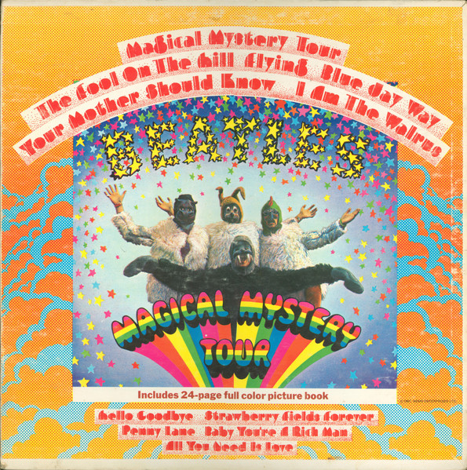
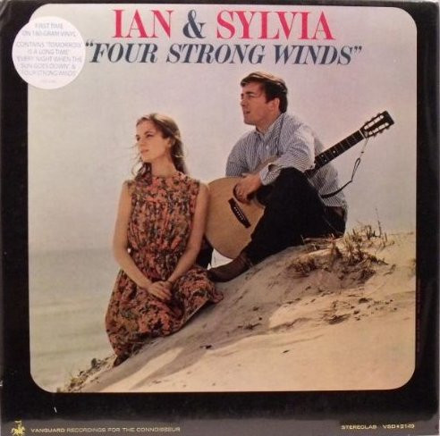

| For Sale | "Fáklya" Központi Népi Táncegyüttes Budapest | Hungary | 1971 | US | Request Records (2) | SRLP 8143 |
 | For Sale | 101 Strings | Soul Of The Gypsies | | US | Alshire | S-5024 |
 | For Sale | Al Conte Quartet | Happy Time! The Scintillating Piano-Banjo Rhythms Of The Al Conte Quartet | | US | Columbia | CL 1404 |
 | For Sale | Al Hirt | Our Man In New Orleans | 1963 | US | RCA Victor | LSP-2607 |
 | For Sale | Al Jolson | The Best Of Al Jolson | 1962 | US | Decca | DXA 169 |
 | For Sale | Al Jolson | The Jolson Story "Rock-A-Bye Your Baby..." | 1980 | US | MCA Records | MCA-27052 |
 | Personal | Al Stewart | Year Of The Cat | 1976 | US | Janus Records | JXS-7022 |
 | Personal | The Alan Parsons Project | I Robot | 1977 | US | Arista | AL 7002 |
| Personal | The Alan Parsons Project | I Robot | 1977 | US | Arista | AL 7002 |
 | For Sale | Alexander Brailowsky | The 24 Preludes | 1960 | Canada | Columbia Masterworks | ML 5444 |
 | For Sale | The Alexandrov Red Army Ensemble | Soviet Army Chorus & Band | 1960 | US | Parliament | PLP (S)-128 |
 | For Sale | Alexis Weissenberg | Sonatas No. 62 In E-flat / No. 50 In D / No. 33 In C Minor | 1969 | US | RCA Red Seal | LSC-3111 |
 | For Sale | Alfons Bauer | Music Of The German Alps | 1959 | US | Capitol Records | ST 10211 |
 | For Sale | Alfons Bauer And His Hofbrau Entertainers | More German Beer-Drinking Music | | US | Capitol Records | T 10297 |
 | For Sale | Alfred Drake | The Rubáiyát Of Omar Khayyam & Sohrab And Rustum | | US | Caedmon Records | TC-1023 |
 | Personal | America (2) | America | | US | Warner Bros. Records | BS 2576 |
 | Personal | America (2) | Holiday | | US | Warner Bros. Records | W 2808 |
 | For Sale | André Kostelanetz And His Orchestra | Kostelanetz Conducts Broadway And Movie Favorites | | US | Columbia | CB-11 |
 | For Sale | Andrés Segovia | Music For The Guitar | 1962 | US | Decca | DL 10046 |
 | For Sale | Andrés Segovia | My Favorite Spanish Encores | 1976 | US | RCA Red Seal | ARL1-0485 |
 | For Sale | Andrés Segovia | The Genius Of Andrés Segovia - A Bach Recital | 1969 | US | Everest | 3261 |
 | For Sale | Andrew Lloyd Webber | Cats (Complete Original Broadway Cast Recording) | 1983 | US | Geffen Records | 2GHS 2031 |
 | Personal | The Animals | The Animals | 1964 | US | MGM Records | SE 4264 |
 | For Sale | The Anita Kerr Singers | The Anita Kerr Singers Reflect On The Hits Of Burt Bacharach & Hal David | 1969 | US | Dot Records | DLP 25906 |
 | For Sale | Anne Murray | A Country Collection | 1980 | US | Capitol Records | ST-12039 |
 | For Sale | Anne Murray | A Little Good News | 1983 | Australia | Capitol Records | ST-12301 |
 | For Sale | Anne Murray | A Little Good News | 1983 | Australia | Capitol Records | ST-12301 |
 | For Sale | Anne Murray | A Little Good News | 1983 | US | Capitol Records | ST-12301 |
 | For Sale | Anne Murray | Anne Murray | 1971 | US | Capitol Records | ST-667 |
 | For Sale | Anne Murray | Anne Murray's Greatest Hits | 1980 | US | Capitol Records | SOO-12110 |
 | For Sale | Anne Murray | Christmas Wishes | 1981 | US | Capitol Records | SN-16232 |
 | For Sale | Anne Murray | Christmas Wishes | 1981 | US | Capitol Records | SN 16232 |
 | For Sale | Anne Murray | Country | 1981 | US | Capitol Records | SN-16213 |
 | For Sale | Anne Murray | Country | 1974 | US | Capitol Records | ST 511324 |
 | For Sale | Anne Murray | Danny's Song | 1973 | US | Capitol Records | ST-11172 |
 | For Sale | Anne Murray | Heart Over Mind | 1984 | US | Capitol Records | SJ-12363 |
 | For Sale | Anne Murray | Heart Over Mind | 1984 | US | Capitol Records | SJ-12363 |
 | For Sale | Anne Murray | Heart Over Mind | 1984 | US | Capitol Records | SJ-12363 |
 | For Sale | Anne Murray | Highly Prized Possession | 1974 | US | Capitol Records | ST-11354 |
 | For Sale | Anne Murray | I'll Always Love You | 1979 | US | Capitol Records | SOO-12012 |
 | For Sale | Anne Murray | I'll Always Love You | 1979 | US | Capitol Records | SOO-12012 |
 | For Sale | Anne Murray | Keeping In Touch | 1976 | US | Capitol Records | ST-11559 |
| For Sale | Anne Murray | Keeping In Touch | 1976 | US | Capitol Records | ST-11559 |
 | For Sale | Anne Murray | Let's Keep It That Way | 1978 | US | Capitol Records | ST-11743 |
 | For Sale | Anne Murray | Let's Keep It That Way | 1978 | US | Capitol Records | ST-11743 |
 | For Sale | Anne Murray | Love Song | 1974 | US | Capitol Records | ST-11266 |
 | For Sale | Anne Murray | New Kind Of Feeling | 1979 | Canada | Capitol Records | SW-11849 |
 | For Sale | Anne Murray | New Kind Of Feeling | 1979 | US | Capitol Records | SW-11849 |
 | For Sale | Anne Murray | New Kind Of Feeling | 1979 | US | Capitol Records | SW-511849 |
 | For Sale | Anne Murray | Snowbird | | US | Capitol Records | ST-579 |
 | For Sale | Anne Murray | Snowbird | 1970 | US | Capitol Records | ST-579 |
 | For Sale | Anne Murray | Somebody's Waiting | 1980 | Barbados | Capitol Records | SOO-12064 |
| For Sale | Anne Murray | Somebody's Waiting | 1980 | Barbados | Capitol Records | SOO-12064 |
 | For Sale | Anne Murray | Somebody's Waiting | 1980 | US | Capitol Records | SOO-12064 |
 | For Sale | Anne Murray | Something To Talk About | 1986 | US | Capitol Records | SJ-12466 |
 | For Sale | Anne Murray | Talk It Over In The Morning | | US | Capitol Records | ST-500821 |
 | For Sale | Anne Murray | Talk It Over In The Morning | 1971 | US | Capitol Records | ST 821 |
 | For Sale | Anne Murray | The Hottest Night Of The Year | 1982 | US | Capitol Records | ST-12225 |
 | For Sale | Anne Murray | This Way Is My Way | 1969 | Canada | Capitol Records | ST-6330 |
 | For Sale | Anne Murray | Together | 1975 | US | Capitol Records | ST-11433 |
 | For Sale | Anne Murray | What About Me | | US | Pickwick/33 Records | SPC 3350 |
 | For Sale | Anne Murray | Where Do You Go When You Dream | 1981 | US | Capitol Records | SOO-12144 |
 | For Sale | Anne Murray | Anne Murray / Glen Campbell | | US | Capitol Records | SN-11992 |
| For Sale | Anne Murray | Anne Murray / Glen Campbell | | US | Capitol Records | SN-11992 |
 | For Sale | Anton Karas | Viennese Bonbons Volume II | 1957 | US | Period Records | RL 1918 |
 | For Sale | Antonín Dvořák | The New World - Ninth Symphony | 1977 | Canada | Funk & Wagnalls | FW-315 |
 | For Sale | Antonio Vivaldi | The Mandolin Concerti And Concerto For Violino Discordato | 1980 | US | Musical Heritage Society | MHS 1100 |
 | Personal | Aretha Franklin | Aretha's Gold | | US | Atlantic | SD 8227 |
 | Personal | Arlo Guthrie | Alice's Restaurant | 1976 | US | Reprise Records | 6267 |
 | Personal | Arlo Guthrie | Power Of Love | 1981 | US | Warner Bros. Records | BSK 3558 |
 | Personal | Arlo Guthrie | Running Down The Road | 1969 | US | Reprise Records | RS 6346 |
 | Personal | Arlo Guthrie | One Night | 1978 | US | Warner Bros. Records | BSK 3232 |
 | For Sale | Arthur Smith (2) | Battling Banjos | 1973 | US | Monument | Z 32259 |
 | For Sale | Artie Matthews | Pastimes & Piano Rags | 1974 | UK | Nonesuch | H-71299 |
 | For Sale | Artie Shaw | A Legacy | 1984 | US | Book-Of-The-Month Records | 71-7715 |
 | For Sale | Artie Shaw | Big Bands: Artie Shaw | 1983 | US | Time Life Music | STBB-06 |
| For Sale | Artie Shaw | The Complete Artie Shaw, Vol. I 1938-1939 | 1976 | US | Bluebird (3) | AXM2-5517 |
 | For Sale | Artie Shaw And His Orchestra | Moonglow | 1956 | US | RCA Victor | LPM-1244 |
 | For Sale | Artie Shaw And His Orchestra | Reissued By Request | | US | RCA Victor | LPM-1648 |
 | Personal | Asia (2) | Asia | 1982 | US | Geffen Records | GHS 2008 |
 | Personal | Atlanta Rhythm Section | A Rock And Roll Alternative | 1976 | US | Polydor | PD-1-6080 |
 | Personal | Bachman-Turner Overdrive | Not Fragile | 1974 | US | Mercury | SRM-1-1004 |
 | For Sale | Baja Marimba Band | Heads Up! | 1967 | US | A&M Records | SP-4123 |
 | For Sale | Baja Marimba Band | Watch Out! | 1966 | US | A&M Records | SP-4118 |
 | For Sale | The Band Of Her Majesty's Royal Marines Commando Forces | The Best Of The Royal Marines | 1975 | US | London Records | SW 99622 |
 | Personal | The Band | Rock Of Ages (The Band In Concert) | 1975 | US | Capitol Records | SABB-11045 |
 | For Sale | Banda De Aviación De Madrid | Spanish Marches | 1978 | US | Olympic Records (4) | OL-6146 |
 | For Sale | The Banjo Barons | Banjo Party With The Banjo Barons | 1961 | US | Columbia | CL 1689 |
 | For Sale | Barbara Dane | On My Way | 1962 | US | Capitol Records | T 1758 |
 | For Sale | Barbra Streisand | Barbra Joan Streisand | 1971 | US | Columbia | KC 30792 |
 | For Sale | Barbra Streisand | Barbra Streisand's Greatest Hits - Volume 2 | 1978 | US | Columbia | FC 35679 |
| For Sale | Barbra Streisand | Barbra Streisand's Greatest Hits - Volume 2 | 1978 | US | Columbia | FC 35679 |
| For Sale | Barry Goldwater | Acceptance Speech Republican National Convention 1964 | 1964 | US | Greenleaf Records | M102-64-A |
 | For Sale | Barry Manilow | Greatest Hits | 1978 | US | Arista | A2L 8601 |
 | Personal | The Beatles | Magical Mystery Tour | 1976 | US | Capitol Records | SMAL-2835 |
|  | Personal | The Beatles | Magical Mystery Tour | 1967 | US | Capitol Records | SMAL-2835 |
 | For Sale | Bedřich Smetana | Overture To The Bartered Bride / Symphony No. 5 In E Minor "From The New World" / Slavonic Dances Nos. 1 And 2 | | US | Music Treasures Of The World | MT 22 |
 | For Sale | Bellamy Brothers | Featuring "Let Your Love Flow" (And Others) | 1976 | US | Warner Bros. Records | BS 2941 |
 | For Sale | Bellamy Brothers | Howard & David | 1985 | US | Curb Records | MCA-5586 |
 | For Sale | Ben Webster | Giants Of Jazz | 1982 | US | Time Life Records | STL-J21 |
 | For Sale | Bengt Granstam | Dalakoraler Och Bröllopsmusik | | Sweden | Proprius | PROP 7763 |
 | For Sale | Benny Goodman | Big Bands: Benny Goodman | 1983 | US | Time Life Music | STBB-03 |
 | For Sale | Benny Goodman And His Orchestra | Benny In Brussels Volume 1 | 1958 | US | Columbia | CL 1247 |
 | For Sale | Bessie Smith | The Bessie Smith Story - Volume 2 | 1956 | US | Columbia | CL 856 |
 | For Sale | Bill Monroe | Bill Monroe And Charlie Monroe | 1969 | US | Decca | DL 75066 |
 | For Sale | Billie Holiday | Giants Of Jazz: Billie Holiday | 1979 | US | Time Life Records | STL-J03 |
 | For Sale | Billy Edd Wheeler | I Ain't The Worryin' Kind | 1968 | US | Kapp Records | KS-3567 |
 | For Sale | Billy Swan | I Can Help | 1974 | US | Monument | KZ 33279 |
 | For Sale | Billy Swan | Rock 'n' Roll Moon | 1975 | Canada | Monument | KZ 33805 |
 | For Sale | Billy Swan | You're Ok, I'm Ok | 1978 | US | Pickwick | SPC-3743 |
 | For Sale | Billy Walker | Portrait Of Billy | 1969 | US | Monument | SLP-18116 |
 | For Sale | Bing Crosby | Bing Crosby | 1965 | US | Metro Records | MS-523 |
 | For Sale | Bing Crosby | Bing: A Musical Autobiography | 1954 | US | Decca | DX-151 |
 | For Sale | Bing Crosby | Home On The Range | 1956 | US | Decca | DL 8210 |
 | For Sale | Bing Crosby | Merry Christmas | 1955 | US | Decca | DL 8128 |
 | For Sale | Bing Crosby | Rare Early Recordings 1929-1933 | 1973 | US | Biograph | BLP-C-13 |
 | For Sale | Bix Beiderbecke | Bix Beiderbecke | 1979 | US | Time Life Records | STL-J04 |
 | For Sale | Bix Beiderbecke | The Bix Beiderbecke Story / Volume 1 - Bix And His Gang | 1952 | US | Columbia | GL 507 |
| For Sale | Bix Beiderbecke | The Bix Beiderbecke Story / Volume 1 - Bix And His Gang | 1952 | US | Columbia | GL 507 |
 | For Sale | Bix Beiderbecke | The Bix Beiderbecke Story / Volume 2 - Bix And Tram | 1952 | US | Columbia | GL 508 |
 | For Sale | Bix Beiderbecke | The Bix Beiderbecke Story / Volume 3 - Whiteman Days | 1952 | US | Columbia | GL 509 |
| For Sale | Bix Beiderbecke | The Bix Beiderbecke Story / Volume 3 - Whiteman Days | 1952 | US | Columbia | GL 509 |
 | Personal | Blood, Sweat And Tears | Blood, Sweat & Tears | | US | Columbia | CS 9720 |
 | Personal | Blood, Sweat And Tears | Blood, Sweat & Tears Greatest Hits | 1972 | US | Columbia | KC 31170 |
 | Personal | The Blues Brothers | Briefcase Full Of Blues | | US | Atlantic | SD 19217 |
 | For Sale | Bob Crosby | Big Bands: Bob Crosby | 1984 | US | Time Life Music | STBB-14 |
 | Personal | Bob Seger And The Silver Bullet Band | Against The Wind | 1980 | US | Capitol Records | SOO-12041 |
 | Personal | Bob Seger And The Silver Bullet Band | Night Moves | 1986 | US | Capitol Records | ST-11557 |
 | Personal | Bob Seger And The Silver Bullet Band | Stranger In Town | 1978 | US | Capitol Records | SW-11698 |
 | For Sale | Bobby Goldsboro | Honey | 1968 | US | United Artists Records | UAS 6642 |
 | For Sale | Bonnie Owens | Mother's Favorite Hymns | 1970 | US | Capitol Records | ST-557 |
 | For Sale | Bonnie Tyler | It's A Heartache | 1978 | US | RCA Victor | AFL1-2821 |
 | For Sale | Boots Randolph | Boots Randolph's Yakety Sax | 1963 | US | Monument | SLP-18002 |
 | For Sale | Boots Randolph | Plays 12 Monstrous Sax Hits! | 1965 | US | Monument | SLP 18029 |
 | For Sale | Boots Randolph | The Sound Of Boots | 1968 | US | Monument | SLP 18099 |
 | For Sale | Boris Karloff | The Three Little Pigs And Other Fairy Tales | 1962 | US | Caedmon Records | TC 1129 |
 | For Sale | Boston Pops Orchestra | Sousa Marches | 1973 | US | RCA Camden | CAS-2593(e) |
 | For Sale | Boston Pops Orchestra | Boston Pops Marches | 1952 | US | RCA Victor Red Seal | WEPR 22 |
 | For Sale | Boz Scaggs | Down Two Then Left | 1977 | US | Columbia | JC 34729 |
 | For Sale | Brad Swanson | 22 Great Ragtime Hits | 1974 | US | Thunderbird Records | THDX 9018-2 |
 | For Sale | Brenda Lee | "Let Me Sing" | 1964 | US | Decca | DL 74439 |
 | For Sale | Brenda Lee | 10 Golden Years | 1966 | US | Decca | DL 74757 |
 | For Sale | Brenda Lee | 10 Golden Years | | US | MCA Records | MCA-107 |
 | For Sale | Brenda Lee | All Alone Am I | 1963 | US | Decca | DL 74370 |
| For Sale | Brenda Lee | All Alone Am I | 1963 | US | Decca | DL 74370 |
 | For Sale | Brenda Lee | All Alone Am I | 1963 | US | Decca | DL 4370 |
 | For Sale | Brenda Lee | By Request | 1964 | US | Decca | DL 74509 |
 | For Sale | Brenda Lee | Emotions | 1961 | US | Decca | DL 4104 |
 | For Sale | Brenda Lee | Emotions | 1961 | US | Decca | DL 4104 |
 | For Sale | Brenda Lee | Even Better | 1980 | US | MCA Records | MCA-3211 |
 | For Sale | Brenda Lee | Greatest Country Hits | 1982 | US | MCA Records | MCA-5342 |
 | For Sale | Brenda Lee | Here's Brenda Lee! | 1967 | US | Vocalion (2) | VL 73795 |
 | For Sale | Brenda Lee | New Sunrise | 1973 | US | MCA Records | MCA-373 |
 | For Sale | Brenda Lee | Now | 1974 | US | MCA Records | MCA 433 |
 | For Sale | Brenda Lee | Sincerely | 1963 | US | Decca | DL 4216 |
 | For Sale | Brenda Lee | Sincerely | 1962 | US | Decca | DL 74216 |
 | For Sale | Brenda Lee | Take Me Back | 1980 | US | MCA Records | MCA-5143 |
 | For Sale | Brenda Lee | This Is Brenda | 1960 | US | Decca | DL 4082 |
 | For Sale | British Regimental Bands | Pass In Review | 1962 | US | Somerset | SF-16300 |
 | For Sale | Brooke Pemberton | The Ragtime Kid | 1958 | US | Warner Bros. Records | WS 1235 |
 | For Sale | Brother International Corporation | Hear How To Touch Type - For Beginners Or Refresher Course | 1960 | US | Brother International Corporation | none |
 | Personal | Brothers Johnson | Right On Time | 1977 | US | A&M Records | SP-4644 |
 | For Sale | The Browns (3) | The Best Of The Browns | 1966 | US | RCA Victor | LSP-3561 |
 | For Sale | The Browns (3) | Town & Country | 1960 | US | RCA Victor | LSP-2174 |
 | For Sale | The Browns (3) | Sing Their Hits | 1960 | US | RCA Victor | LPM-2260 |
 | For Sale | Bruno Walter | Waltzes- Overtures | 1956 | US | Columbia Masterworks | ML 5113 |
 | For Sale | Bruno Walter | An Evening With Bruno Walter | 1958 | US | Columbia Masterworks | WZ--2 |
 | For Sale | Buck Owens | Live At The Nugget | 1972 | US | Capitol Records | SMAS 11039 |
 | For Sale | Buck Owens | 41st Street Lonely Hearts' Club / Weekend Daddy | 1975 | US | Capitol Records | ST 11390 |
 | For Sale | Buck Owens | Buck Owens | 1961 | US | La Brea | L 8017 |
 | For Sale | Buck Owens | Buck Owens | 1962 | US | Capitol Records | T1489 |
 | For Sale | Buck Owens | Buck Owens In London | 1969 | US | Capitol Records | ST-232 |
 | For Sale | Buck Owens | Buck Owens Sings Harlan Howard | 1961 | US | Capitol Records | T 1482 |
 | For Sale | Buck Owens | The Best Of Buck Owens | 1964 | US | Capitol Records | ST-2105 |
 | For Sale | Buck Owens | The Best Of Buck Owens | 1964 | US | Capitol Records | T-2105 |
 | For Sale | Buck Owens | The Guitar Player | 1968 | Canada | Capitol Records | ST 2994 |
 | For Sale | Buck Owens | Buck Owens & Ferlin Husky & Faron Young | 1965 | Canada | Hilltop | JS-6027 |
 | For Sale | Buck Owens | Merry Christmas From Buck Owens & Susan Raye | 1971 | US | Capitol Records | ST-837 |
 | For Sale | Buck Owens | The Good Old Days (Are Here Again) | 1973 | Canada | Capitol Records | ST-11204 |
 | For Sale | Buck Owens | We're Gonna Get Together | 1970 | US | Capitol Records | ST-448 |
 | For Sale | Buck Owens And His Buckaroos | (It's A) Monsters' Holiday | 1974 | US | Capitol Records | ST-11332 |
 | For Sale | Buck Owens And His Buckaroos | Ain't It Amazing, Gracie | 1973 | US | Capitol Records | SMAS-11180 |
 | For Sale | Buck Owens And His Buckaroos | Getting Used To Losing You | 1969 | US | Sears | SPS-129 |
 | For Sale | Buck Owens And His Buckaroos | I Don't Care | 1964 | US | Capitol Records | ST 2186 |
 | For Sale | Buck Owens And His Buckaroos | I Wouldn't Live In New York City | 1970 | US | Capitol Records | ST 628 |
 | For Sale | Buck Owens And His Buckaroos | I've Got A Tiger By The Tail | 1965 | US | Capitol Records | ST 2283 |
 | For Sale | Buck Owens And His Buckaroos | It Takes People Like You To Make People Like Me | 1968 | US | Capitol Records | ST 2841 |
 | For Sale | Buck Owens And His Buckaroos | Open Up Your Heart | 1966 | US | Capitol Records | ST 2640 |
 | For Sale | Buck Owens And His Buckaroos | The Best Of Buck Owens, Vol. 2 | 1969 | US | Capitol Records | ST-2897 |
 | For Sale | Buck Owens And His Buckaroos | The Best Of Buck Owens, Vol. 2 | 1969 | US | Capitol Records | ST-2897 |
 | For Sale | Buck Owens And His Buckaroos | The Instrumental Hits Of Buck Owens And His Buckaroos | 1965 | US | Capitol Records | ST-2367 |
 | For Sale | Buck Owens And His Buckaroos | The Kansas City Song | 1970 | US | Capitol Records | ST-476 |
 | For Sale | Buck Owens And His Buckaroos | Together Again / My Heart Skips A Beat | 1964 | US | Capitol Records | ST-2135 |
 | For Sale | Buck Owens And His Buckaroos | Together Again / My Heart Skips A Beat | 1964 | US | Capitol Records | ST 2135 |
 | For Sale | Buck Owens And His Buckaroos | Your Tender Loving Care | 1967 | US | Capitol Records | ST 2760 |
 | For Sale | Buck Owens | The Best Of Buck Owens & Susan Raye | 1972 | Canada | Capitol Records | ST-11084 |
 | For Sale | The Buckaroos | The Buck Owens Song Book | 1966 | US | Capitol Records | T-2436 |
 | For Sale | Buddy Cole | Powerhouse! | 1959 | US | Warner Bros. Records | WS 1310 |
 | For Sale | Buddy Greco | Greatest Hits | 1963 | US | Epic | LN 24043 |
 | For Sale | Buddy Greco | On Stage | 1964 | US | Epic | BN 26116 |
 | Personal | Buffalo Springfield | Retrospective The Best Of Buffalo Springfield | | US | ATCO Records | SD 33-283 |
 | For Sale | Burl Ives | Coronation Concert | 1954 | US | Decca | DL 8080 |
 | For Sale | Burl Ives | Have A Holly Jolly Christmas | 1965 | US | Decca | DL 74689 |
 | For Sale | Burl Ives | How Great Thou Art | 1971 | US | Word | WST-8537-LP |
 | For Sale | Burl Ives | It's Just My Funny Way Of Laughin' | 1962 | US | Decca | DL 4279 |
 | For Sale | Burl Ives | Shall We Gather At The River? | 1965 | US | Word | W-3339-LP |
 | For Sale | Burl Ives | Something Special | 1966 | US | Decca | DL 74789 |
 | For Sale | Burl Ives | Something Special | 1966 | US | Decca | DL 4789 |
 | For Sale | Burl Ives | The Return Of The Wayfaring Stranger | 1960 | US | Columbia | CL 1459 |
 | For Sale | Burl Ives | The Versatile Burl Ives! | 1961 | US | Decca | DL 74152 |
 | For Sale | Burl Ives | The Wayfaring Stranger | 1955 | US | Columbia | CL 628 |
 | For Sale | Burl Ives | The Wild Side Of Life | 1955 | US | Decca | DL 8107 |
 | For Sale | Cal Smith | It's Time To Pay The Fiddler | 1975 | US | MCA Records | MCA-467 |
 | For Sale | Cal Smith | My Kind Of Country | 1975 | US | MCA Records | MCA-485 |
 | For Sale | Cal Smith | Swinging Doors | 1973 | US | MCA Coral | CB-20008 |
 | For Sale | Cal Tjader Quartet | Delightfully Light | 1957 | US | Jazztone (2) | J1277 |
 | For Sale | Cambridge Language Series | Spanish Vol.2 | | US | Interdisca School Of Language Studies | L-142 |
 | For Sale | Carl Smith (3) | Carl Smith And The Tunesmiths | 1970 | US | Columbia | C 30215 |
 | For Sale | Carl Smith (3) | Carl Smith Sings A Tribute To Roy Acuff | 1969 | US | Columbia | CS 9870 |
 | For Sale | Carl Smith (3) | Carl Smith's Greatest Hits | | US | Columbia | CS 8737 |
 | For Sale | Carl Smith (3) | Deep Water | 1967 | US | Columbia | CS 9622 |
 | For Sale | Carl Smith (3) | Faded Love And Winter Roses | 1969 | US | Columbia | CS 9786 |
 | For Sale | Carl Smith (3) | I Want To Live And Love | 1965 | US | Columbia | CL 2293 |
 | For Sale | Carl Smith (3) | Love While You Can | 1967 | US | Columbia Record Club | DS 341 |
 | For Sale | Carl Smith (3) | The Carl Smith Touch | | US | Columbia Special Products | CSRP 8332 |
 | For Sale | Carl Smith (3) | The Country Gentleman | 1967 | US | Columbia | CS-9410 |
 | For Sale | Carla Alberghetti | My Cousin Josefa (An Original Recording) | 1969 | US | Harlequin Records (2) | H-3270 |
 | For Sale | Carlos Gardel | Lo Mejor De | 1977 | Mexico | RCA Victor | MKLA-34 |
 | For Sale | Carlos Montoya | A Spanish Fiesta / Spanish Gypsy Airs | 1975 | US | VOX (6) | STPL 513.430 |
 | For Sale | Carlos Montoya | Adventures In Flamenco | | US | ABC-Paramount | ABCS-508 |
 | For Sale | Carlos Montoya | Carlos Montoya | 1960 | US | RCA Victor | LPM-2251 |
 | For Sale | Carlos Montoya | Carlos Montoya And His Flamenco Guitar | 1958 | US | RCA Victor | LPM-1610 |
 | For Sale | Carlos Montoya | Carlos Montoya and His Flamenco Guitar | 1961 | US | RCA Victor | LSP 1610 |
 | For Sale | Carlos Montoya | Carlos Montoya Plays Malagueña, 2 Sets Of Variaciones, Toque De Lavarte, Bolero, Alegria, Farruca, Zambrilla, Chufla | 1972 | US | VOX (6) | STPL 513.450 |
 | For Sale | Carlos Montoya | Flamenco Concert | 1964 | US | RCA Victor | LPM-2846 |
 | For Sale | Carlos Montoya | Flamenco Fire | 1958 | US | ABC-Paramount | ABC-191 |
 | For Sale | Carlos Montoya | Flamenco Fury | | US | Everest | SDBR 3263 |
 | For Sale | Carlos Montoya | Flamenco Guitar | 1957 | US | ABC-Paramount | ABC 157 |
 | For Sale | Carlos Montoya | Malagueña | 1961 | US | RCA Victor | LSP-2380 |
 | For Sale | Carlos Montoya | Montoya! | 1958 | US | ABC-Paramount | ABC-202 |
 | For Sale | Carlos Montoya | Patterns In Flamenco | | US | Cook | 10289 |
 | For Sale | Carlos Montoya | Plays Flamenco Guitar | | US | Palace (2) | PST-709 |
 | For Sale | Carlos Montoya | Spontaneous Flamenco | 1966 | US | ABC-Paramount | ABCS-564 |
 | For Sale | Carmel Quinn | Arthur Godfrey Presents Carmel Quinn | 1955 | US | Columbia | CL 629 |
 | For Sale | Carmel Quinn | Carmel Quinn's TV Party | 1956 | US | Columbia | CL 807 |
 | For Sale | Carmen D'Oro | I Aim To Please (Deseo Complacer) | | | Qui Records | Q1800 |
 | Personal | The Cars | The Cars | 1978 | US | Elektra | 6E-135 |
 | For Sale | Cecil Brower And His Square Dance Fiddlers | America's Favorite Square Dances (With Calls) | 1953 | US | Cumberland Records | MGC-29508 |
 | For Sale | Charles Aznavour | The Aznavour Story | 1965 | US | Reprise Records | R-6172 |
 | For Sale | Charley Pride | A Sunshiny Day With Charley Pride | 1972 | US | RCA Victor | LSP-4742 |
 | For Sale | Charley Pride | I'm Just Me | 1971 | US | RCA Victor | LSP-4560 |
 | For Sale | Charley Pride | In Person | 1969 | US | RCA Victor | LSP-4094 |
 | For Sale | Charley Pride | Songs Of Pride...Charley That Is | 1968 | US | RCA Victor | LSP-4041 |
 | For Sale | Charlie Barnet | Big Bands: Charlie Barnet | 1983 | US | Time Life Music | STBB07 |
 | For Sale | Charlie Barnet | The Complete Charlie Barnet Vol. 1/1935-1937 | 1977 | US | Bluebird (3) | AXM2-5526 |
 | Personal | Charlie Byrd | Bossa Nova Pelos Passaros | 1966 | US | Riverside Records | RM 436 |
 | Personal | Charlie Byrd | For All We Know | 1971 | US | Columbia | G 30622 |
 | For Sale | Charlie Rich | A Time For Tears | 1970 | US | Sun (9) | SUN 123 |
 | For Sale | Charlie Rich | Behind Closed Doors | 1973 | US | Epic | KE 32247 |
 | For Sale | Charlie Rich | Sun's Best Of Charlie Rich | 1974 | US | Sun (9) | SUN 135 |
| For Sale | Charlie Rich | Sun's Best Of Charlie Rich | 1974 | US | Sun (9) | SUN 135 |
 | For Sale | Charlie Rich | The Silver Fox | 1974 | US | Epic | PE 33250 |
 | For Sale | Charlie Rich | The Silver Fox | 1974 | US | Power Pak | PO-252 |
 | For Sale | Cher | Half-Breed | 1973 | US | MCA Records | MCA 2104 |
| For Sale | Cher | Half-Breed | 1973 | US | MCA Records | MCA 2104 |
| For Sale | Cher | Half-Breed | 1973 | US | MCA Records | MCA 2104 |
 | For Sale | Cher | Half-Breed | 1973 | US | MCA Records | MCA-2104 |
 | For Sale | Chet Atkins | A Session With Chet Atkins | | US | RCA Victor | LSP-1090(e) |
 | For Sale | Chet Atkins | Country Pickin' | 1971 | US | RCA Camden | CXS-9006 |
 | For Sale | Chet Atkins | The Most Popular Guitar | 1961 | US | RCA Victor | LPM-2346 |
 | For Sale | Chet Atkins | The Other Chet Atkins | 1960 | US | RCA Victor | LPM-2175 |
 | For Sale | Chet Atkins | Reminiscing | 1964 | US | RCA Victor | LSP-2952 |
 | Personal | Chicago (2) | Chicago | | US | Columbia | KGP 24 |
 | Personal | Chicago (2) | Chicago Transit Authority | 1969 | US | Columbia | GP 8 |
 | For Sale | The Chipmunks | Christmas With The Chipmunks Vol. 2 | 1963 | US | Liberty | LRP-3334 |
 | For Sale | Chubby Checker | For 'Teen Twisters Only | 1961 | US | Parkway | SP 7009 |
 | For Sale | Chubby Checker | Twistin' Round The World | 1962 | US | Parkway | P-7008 |
 | For Sale | The Clancy Brothers & Tommy Makem | Hearty And Hellish | 1962 | US | Columbia | CS 8571 |
 | For Sale | Claude Debussy | Clair De Lune: A Debussy Piano Recital By Philippe Entremont | 1960 | US | Columbia Masterworks | MS 6214 |
 | For Sale | Clyde Otis And His Orchestra | America's Dance Favorites | | US | Mercury | SR-60089 |
 | For Sale | Coleman Hawkins | Giants Of Jazz: Coleman Hawkins | 1979 | US | Time Life Records | STL-J06 |
 | For Sale | Connie Smith | Ain't We Havin' Us A Good Time | 1972 | US | RCA Victor | LSP-4694 |
 | For Sale | Connie Smith | Back In Baby's Arms | 1969 | US | RCA Victor | LSP-4229 |
 | For Sale | Connie Smith | Back In Baby's Arms | 1969 | US | RCA Victor | LSP 4229 |
 | For Sale | Connie Smith | Connie's Country | 1969 | US | RCA Victor | LSP-4132 |
 | For Sale | Connie Smith | I Love Charley Brown | 1968 | US | RCA Victor | LSP 4002 |
 | For Sale | Connie Smith | I Never Knew (What That Song Meant Before) | 1974 | US | Columbia | KC 33055 |
 | For Sale | Connie Smith | The Best Of Connie Smith | 1972 | US | RCA Victor | LSP 3848 |
 | For Sale | Conway Twitty | I Can't Stop Loving You / (Lost Her Love) On Our Last Date | 1972 | US | Decca | DL 7-5361 |
 | For Sale | The Coon-Sanders Nighthawks | Radio's Aces | 1965 | US | RCA Victor | LPV-511 |
 | Personal | Creedence Clearwater Revival | Bayou Country | | US | Fantasy | 8387 |
 | Personal | Creedence Clearwater Revival | Creedence Clearwater Revival | 1968 | US | Fantasy | 8382 |
 | Personal | Crosby, Stills, Nash & Young | Déjà Vu | 1970 | US | Atlantic | SD 7200 |
 | For Sale | Cy Coleman | The Ages Of Rock Plays The Classic Beat | 1968 | US | MGM Records | E/SE-4502 |
 | For Sale | Cy Payne & His Orchestra | Songs That Won The War | 1973 | UK | CBS | S 30026 |
 | For Sale | The Darol Rice Silver Saxophones | Play The Golden Hymns | 1964 | US | RCA Victor | LSP-2929 |
 | For Sale | Das Hellberg-Duo | Music From The Black Forest | | US | Mace Records | Mxx 10044 |
 | For Sale | The Dave Brubeck Quartet | Jazz Goes To College | 1962 | US | Columbia | CS 8631 |
 | For Sale | The Dave Brubeck Quartet | Jazz: Red Hot And Cool | 1955 | US | Columbia | CL 699 |
 | For Sale | David Houston | A Loser's Cathedral | 1967 | US | Epic | BN 26303 |
 | For Sale | David Houston | A Woman Always Knows | 1971 | US | Epic | E 30657 |
 | For Sale | David Houston | Almost Persuaded | 1966 | US | Epic | LN 24213 |
 | For Sale | David Houston | Already It's Heaven | 1968 | US | Epic | BN 26391 |
 | For Sale | David Houston | Already It's Heaven | 1968 | US | Epic | BN 26391 |
 | For Sale | David Houston | David | | US | Epic | BN 26482 |
 | For Sale | David Houston | David Houston's Greatest Hits | 1968 | US | Epic | BN 26342 |
 | For Sale | David Houston | David Houston's Greatest Hits, Volume II | | US | Columbia Limited Edition | LE 10051 |
 | For Sale | David Houston | Golden Hymns | 1967 | US | Epic | BN 26320 |
 | For Sale | David Houston | Good Things | 1973 | US | Epic | KE 32189 |
 | For Sale | David Houston | Kiss Away | 1968 | US | Columbia Musical Treasuries | DS 398 |
 | For Sale | David Houston | The Day That Love Walked In | 1972 | US | Epic | KE 31385 |
 | For Sale | David Houston | Where Love Used To Live / My Woman's Good To Me | 1969 | US | Epic | BN 26432 |
| For Sale | David Houston | You Mean The World To Me | 1967 | US | Epic | LN 24338 |
 | For Sale | David Houston | My Elusive Dreams | 1967 | US | Epic | BN 26325 |
 | For Sale | David Oistrach | Vivaldi: Double Concerto; Bach: Violin Concertos 1 And 2 | 1957 | US | Columbia Masterworks | ML 5087 |
 | For Sale | David Rose & His Orchestra | A Merry Christmas To You | 1956 | US | MGM Records | E3469 |
 | For Sale | David Yantis | Unconditional Love | 1971 | US | David Yantis Publications | DY-101 |
 | For Sale | Dean Martin | Everybody Loves Somebody | 1964 | US | Reprise Records | RS-6130 |
 | For Sale | Der Flotte Franz Und Seine Bierbrummer | Ja, Das Haben Die Mädchen So Gerne (Schwoof Anno Dazumal) | 1970 | Germany | Baccarola | S 71 753 IU |
 | Personal | Derek & The Dominos | Layla And Other Assorted Love Songs | 1973 | US | ATCO Records | SD 2-704 |
 | For Sale | Diana Trask | The Mood I'm In | 1975 | US | ABC Dot | DOSD-2024 |
 | For Sale | Dick Kesner | Intermezzo | | US | Brunswick | BL 754054 |
 | For Sale | Dick Kesner, His Magic Stradivarius And Orchestra | Dick Kesner And His Magic Stradivarius | 1960 | US | Brunswick | BL 754051 |
 | For Sale | Dick Schory's Percussion And Brass Ensemble | Stereo Action Goes Broadway | 1961 | US | RCA Victor | LSA-2382 |
 | For Sale | Dick Schory's Percussion Pops Orchestra | Holiday For Percussion | 1962 | US | RCA Victor | LSA-2485 |
| For Sale | Dick Schory's Percussion Pops Orchestra | Holiday For Percussion | 1962 | US | RCA Victor | LSA-2485 |
 | For Sale | Die Oberkrainer Musikanten | Die Oberkrainer Musikanten | 1967 | Germany | Fass | 1477 WY |
 | For Sale | Dixieland "All Stars" | The Golden Era Of Dixieland Jazz: 1887-1937 Vol.II | | US | Design Records (2) | DLP-91 |
 | For Sale | Dmitri Shostakovich | Violin Concerto, Op. 99 (First Recording) | 1956 | US | Columbia Masterworks | ML 5077 |
 | For Sale | Dolly Parton | 9 To 5 And Odd Jobs | 1980 | US | RCA Victor | AHL1-3852 |
 | For Sale | Domenico Scarlatti | Sonaten Für Cembalo | 1972 | Germany | Archiv Produktion | 2533 072 |
 | For Sale | Don Gibson | Don Gibson With Spanish Guitars | | US | RCA Victor | LSP-3594 |
 | For Sale | Don Gibson | I Wrote A Song | 1963 | US | RCA Victor | LSP-2702 |
 | For Sale | Don Gibson | Look Who's Blue | 1960 | US | RCA Victor | LPM-2184 |
 | For Sale | Don Gibson | Too Much Hurt | 1965 | US | RCA Victor | LSP 3470 |
 | Personal | Don McLean | American Pie | | US | United Artists Records | UAS-5535 |
 | For Sale | Don Williams (2) | Cafe Carolina | 1984 | US | MCA Records | MCA-5493 |
 | For Sale | Don Williams (2) | Country Boy | 1977 | US | ABC Dot | DO-2088 |
 | For Sale | Don Williams (2) | Especially For You | 1981 | US | MCA Records | MCA-5210 |
 | For Sale | Don Williams (2) | Expressions | | US | ABC Records | AY 1069 |
| For Sale | Don Williams (2) | Expressions | | US | ABC Records | AY 1069 |
 | For Sale | Don Williams (2) | Expressions | 1978 | US | ABC Records | AY 1069 |
 | For Sale | Don Williams (2) | Harmony | 1976 | US | ABC Dot | DOSD-2049 |
 | For Sale | Don Williams (2) | Images | 1978 | UK & Ireland | K-Tel | NE 1033 |
 | For Sale | Don Williams (2) | Visions | 1977 | US | ABC Dot | DO-2064 |
 | For Sale | Don Williams (2) | Vol. III | | US | MCA Records | MCA-37155 |
 | For Sale | Don Williams (2) | Yellow Moon | 1983 | US | MCA Records | MCA-5407 |
 | For Sale | Don Williams (2) | You're My Best Friend | 1975 | US | ABC Dot | DOSD-2021 |
 | Personal | The Doobie Brothers | Minute By Minute | | US | Warner Bros. Records | BSK 3193 |
 | Personal | The Doobie Brothers | Takin' It To The Streets | 1976 | US | Warner Bros. Records | BS 2899 |
 | Personal | The Doobie Brothers | The Captain And Me | | US | Warner Bros. Records | BS 2694 |
 | For Sale | Doris Day | Day Dreams | 1955 | US | Columbia | CL 624 |
 | For Sale | Dorothy Kirsten | The Student Prince | 1953 | Canada | Columbia Masterworks | ML 4592 |
 | For Sale | Dorothy Moore | Misty Blue | 1976 | US | Malaco Records | MAL 6351 |
 | For Sale | Doug Kershaw | Alive & Pickin' | 1975 | US | Warner Bros. Records | BS 2851 |
| For Sale | Doug Kershaw | Alive & Pickin' | 1975 | US | Warner Bros. Records | BS 2851 |
 | For Sale | Doug Kershaw | Doug Kershaw | 1971 | US | Warner Bros. Records | WS 1906 |
 | For Sale | Doug Kershaw | Spanish Moss | 1970 | US | Warner Bros. Records | WS 1861 |
 | For Sale | Doug Kershaw | The Cajun Way | 1969 | US | Warner Bros. Records | WS 1820 |
 | For Sale | Duke Ellington | Big Bands: Duke Ellington | 1983 | US | Time Life Music | STBB-05 |
 | For Sale | Duke Ellington | Flaming Youth | 1969 | US | RCA Victor | LPV-568 |
 | For Sale | Duke Ellington | Giants Of Jazz - Duke Ellington | 1980 | US | Time Life Records | STL-J02 |
 | For Sale | Duke Ellington | The Early Duke Ellington | 1968 | US | Everest Records Archive Of Folk & Jazz Music | FS221 |
| For Sale | Duke Ellington | The Early Duke Ellington | 1968 | US | Everest Records Archive Of Folk & Jazz Music | FS221 |
 | For Sale | Duke Ellington | This Is Duke Ellington | 1971 | US | RCA Victor | VPM-6042 |
 | For Sale | Duke Ellington And His Cotton Club Orchestra | Big Bands: Cotton Club Nights | 1985 | US | Time Life Music | STBB-16 |
 | For Sale | The Dukes Of Dixieland | More Best Of The Dukes Of Dixieland, Vol. 2 | 1962 | US | Audio Fidelity | AFSD 5964 |
 | For Sale | The Dukes Of Dixieland | Piano Ragtime With The Dukes Of Dixieland, Volume 11 | 1960 | US | Audio Fidelity | AFSD-5928 |
 | For Sale | Duo Pomponio-Zarate | Masters Of The Guitar Volume 2 | 1964 | US | RCA Victor Red Seal | LSC-2717 |
 | Personal | Eagles | Hotel California | 1976 | US | Asylum Records | 7E-1084 |
 | For Sale | Earl Thomas Conley | Somewhere Between Right And Wrong | 1982 | US | RCA | AHL1-4348 |
 | For Sale | Earl Wild | The Romantic Rachmaninoff: The Complete Piano Concertos | 1966 | Canada | Reader's Digest | RDA 29-A |
 | For Sale | Earl Wrightson | A Night With Rudolf Friml | 1961 | US | Columbia | CL 1630 |
 | For Sale | Ed Ames | A Time For Living A Time For Hope | 1969 | US | RCA Victor | LSP 4128 |
 | For Sale | Ed Ames | My Cup Runneth Over | | US | RCA Victor | LSP-3774 |
 | For Sale | Ed Ames | My Cup Runneth Over | 1967 | US | RCA Victor | LSP-3774 |
 | For Sale | Ed Ames | Sings Who Will Answer? (And Other Songs Of Our Time) | 1968 | US | RCA Victor | LSP-3961 |
 | For Sale | Ed Ames | Time, Time | 1967 | US | RCA Victor | LSP-3834 |
 | For Sale | Ed Bruce | Ed Bruce | 1980 | US | MCA Records | MCA-3242 |
 | For Sale | Ed Bruce | Ed Bruce | 1976 | US | United Artists Records | UA-LA613-G |
 | For Sale | Ed Bruce | Homecoming | 1984 | US | RCA | AHL1-5324 |
 | For Sale | Ed Bruce | I Write It Down | 1982 | US | MCA Records | MCA-5323 |
 | For Sale | Ed Bruce | Night Things | 1986 | US | RCA Victor | AHL1-5808 |
 | For Sale | Ed Bruce | One To One | 1981 | US | MCA Records | MCA-5188 |
 | For Sale | Ed Bruce | You're Not Leavin' Here Tonight | 1983 | US | MCA Records | MCA-5416 |
 | For Sale | Eddie Condon | Dixieland Dance Party | 1958 | US | Dot Records | DLP 25141 |
 | For Sale | Eddie Rabbitt | Horizon | 1980 | Canada | Elektra | 6E-276 |
| For Sale | Eddie Rabbitt | Horizon | 1980 | Canada | Elektra | 6E-276 |
 | For Sale | Eddie Rabbitt | Horizon | 1980 | US | Elektra | 6E-276 |
 | For Sale | Eddie Rabbitt | Variations | 1978 | US | Elektra | 6E-127 |
 | For Sale | Eddy Duchin And His Orchestra | The Fabulous Eddy Duchin | | US | Vik | LX-1043 |
 | Personal | The Edgar Winter Group | They Only Come Out At Night | 1972 | US | Epic | KE 31584 |
 | For Sale | Edvard Grieg | Grieg's Greatest Hits Made Popular in Songs of Norway | 1971 | Canada | RCA | LSC-3198 |
 | For Sale | Eileen Rodgers | Blue Swing | 1958 | US | Columbia | CS 8029 |
 | For Sale | Eine Große Deutsche Militär-Kapelle | Berühmte Marschmusik | | US | Fiesta | FLPS 1838 |
 | Personal | Electric Light Orchestra | Olé ELO | 1976 | US | United Artists Records | UA-LA630-G |
 | For Sale | Elena Paz | Sing, Say And Speak Spanish | | US | Peter Pan Records | 8014 |
 | Personal | Elton John | Madman Across The Water | 1971 | US | UNI Records | 93120 |
 | Personal | Emerson, Lake & Palmer | Brain Salad Surgery | | US | Manticore | MC 66669 |
 | Personal | Emerson, Lake & Palmer | Emerson, Lake & Palmer | | Canada | Cotillion | SD 9040 |
 | Personal | Emerson, Lake & Palmer | Trilogy | 1972 | US | Cotillion | SD 9903 |
 | Personal | Emerson, Lake & Palmer | Welcome Back My Friends To The Show That Never Ends - Ladies And Gentlemen | 1974 | US | Manticore | MC 3-200 |
 | For Sale | Emma Barrett | Sweet Emma Barrett And Her New Orleans Music | 1963 | US | Southland Records | Southland LP 241 |
 | For Sale | Emmylou Harris | Elite Hotel | 1975 | US | Reprise Records | MS 2236 |
 | For Sale | Enoch Light | The Roaring 20's 16 Greatest Hits | 1971 | US | ABC Records | ABCS-746 |
 | For Sale | Enoch Light And His Orchestra | Discotheque: Dance Dance Dance | | US | Command | SMAS-90099 |
 | For Sale | Enoch Light And The Light Brigade | Pertinent Percussion Cha Cha's | 1960 | US | Command | RS 814 S. D. |
 | For Sale | Enrico Caruso | A Legendary Performer | 1976 | Canada | RCA Red Seal | CRM1-1749 |
 | For Sale | Enrico Caruso | A Treasury Of Immortal Performances | 1951 | US | RCA Victor Red Seal | LCT 1007 |
 | For Sale | Enrico Caruso | Caruso At The Met | 1977 | US | Metropolitan Opera Guild | MET-101 |
 | For Sale | Enrico Caruso | Caruso In Song | 1965 | US | RCA Victor Red Seal | LM-2778 |
 | For Sale | Enrico Caruso | From The Best Of Caruso | 1960 | US | RCA Victor Red Seal | SP-33-75 |
 | For Sale | Erich Kunz | Erich Kunz Sings German University Songs Of Wenching, Wining And Other Irreverent Pastimes | | Australia | Vanguard | VRS-477 |
 | For Sale | Erich Kunz | Erich Kunz Sings German University Songs (Volume 4) | 1959 | US | Vanguard | VSD-2040 |
 | For Sale | Erich Kunz | Erich Kunz Sings German University Songs Of Wooing, Wit And Wanderlust | | US | Vanguard | SRV-278 SD |
| For Sale | Erich Kunz | Erich Kunz Sings German University Songs Of Wooing, Wit And Wanderlust | | US | Vanguard | SRV-278 SD |
 | For Sale | Erich Leinsdorf | The World's Greatest Marches | 1964 | US | RCA Victor Red Seal | LSC-2757 |
 | For Sale | Ernest Tubb | Ernest Tubb | 1975 | US | MCA Records | MCA-496 |
 | For Sale | Ernest Tubb And His Texas Troubadours | Ernest Tubb And His Texas Troubadours | 1960 | US | Vocalion (2) | VL 3684 |
 | For Sale | Ernest Tubb And His Texas Troubadours | Ernest Tubb's Golden Favorites | 1961 | US | Decca | DL 74118 |
 | For Sale | Ernest Tubb And His Texas Troubadours | Ernest Tubb's Golden Favorites | 1973 | US | MCA Records | MCA-84 |
 | For Sale | Ernest Tubb And His Texas Troubadours | My Pick Of The Hits | 1965 | US | Decca | DL 74640 |
 | For Sale | Ernesto Bitetti | Contemporary Music For The Guitar | 1971 | US | Westminster Gold Series | WGS-8149 |
 | For Sale | Ernst Neger | Die Große Stimmungsparade | 1966 | Germany | Ariola | 73 797 IU |
 | For Sale | Erroll Garner | Concert By The Sea | 1956 | US | Columbia | CL 883 |
 | For Sale | Eugene Istomin | Nocturnes Volume I: Nos. 1-10 | | US | Columbia Masterworks | ML 5054 |
 | For Sale | Eugene Istomin | Tchaikovsky Piano Concerto No. 1 In B-Flat Minor, Op. 23 | 1959 | Canada | Columbia Masterworks | ML 5399 |
 | For Sale | Eugene Ormandy | Fledermaus Suite | 1956 | US | Columbia Masterworks | ML 5166 |
 | For Sale | Eve Watkinson | The Little Match Girl: Spoken Arts Treasury Of Hans Christian Andersen Fairy Tales Read By Eve Watkinson And Christopher Casson Volume V | 1963 | US | Spoken Arts | SA 875 |
 | For Sale | The Exotic Guitars | 22 Great Guitar Favorites | 1978 | US | Ranwood | RAN 7014 |
 | For Sale | Ezio Pinza | Pinza | 1958 | US | Columbia Masterworks | ML 5239 |
 | For Sale | Fanny Brice | The Original Funny Girl | 1968 | US | Audio Fidelity | AFLP 707 |
 | For Sale | The Fantastic Strings Of Felix Slatkin | Paradise Found | 1960 | US | Liberty | LMM 13001 |
 | For Sale | Faron Young | Fan Club Favorites | 1961 | US | Capitol Records | T-1528 |
 | For Sale | Faron Young | Faron Young Sings The Best Of Faron Young | 1960 | US | Capitol Records | T1450 |
 | For Sale | Faron Young | Faron Young's Memory Lane | 1964 | US | Capitol Records | T 2037 |
 | For Sale | Faron Young | Hello Walls Fan Club Favorites | 1961 | US | Capitol Records | T 1528 |
 | For Sale | Faron Young | Sings The Best Of Jim Reeves | 1966 | US | Mercury | SR 61058 |
 | For Sale | Faron Young | The All-Time Great Hits Of Faron Young | 1967 | US | Capitol Records | DT 1876 |
 | For Sale | Faron Young | The Object Of My Affection | 1958 | US | Capitol Records | T 1004 |
 | For Sale | Faron Young | This Is Faron Young! | 1961 | US | Capitol Records | T1096 |
 | For Sale | Faye Tucker | Blues From A Broken Hearted Country Gal | 1968 | US | Somerset | SF-28700 |
 | For Sale | Felix Mendelssohn-Bartholdy | Concerto In E Minor For Violin And Orchestra / Concerto In D Major For Violin And Orchestra | 1960 | US | Columbia Masterworks | ML 4965 |
| For Sale | Felix Mendelssohn-Bartholdy | Concerto In E Minor For Violin And Orchestra / Concerto In D Major For Violin And Orchestra | 1960 | US | Columbia Masterworks | ML 4965 |
 | For Sale | Felix Mendelssohn-Bartholdy | Symphony No. 4 In A Major, Op. 90 (Italian) / Symphony No. 5 In D Major, Op. 107 (Reformation) | 1975 | Italy | Deutsche Grammophon | 138 684 SLPM |
 | For Sale | Felix Mendelssohn-Bartholdy | Symphony No. 4, "Italian" / Symphony No. 5, "Reformation" | | Canada | Deutsche Grammophon | 2535 171 |
 | For Sale | Ferde Grofé | Grofé ― Grand Canyon Suite • Beethoven ― Wellington's Victory | 1960 | US | RCA Victor Red Seal | LM-2433 |
 | For Sale | Ferlin Husky | Gone | 1960 | US | Capitol Records | T1383 |
 | For Sale | Ferlin Husky | Sings The Songs Of Music City U.S.A. | 1966 | US | Capitol Records | ST-2439 |
 | For Sale | Ferlin Husky | The Letter You Promised To Write | | US | Sears | SPS-106 |
 | For Sale | Ferlin Husky | True True Lovin' | 1973 | Canada | ABC/Dunhill Records | ABCX-776 |
 | For Sale | Firehouse Five Plus Two | Goes To A Fire | 1964 | US | Good Time Jazz | S 10052 |
 | For Sale | Fletcher Henderson | The Immortal Fletcher Henderson | 1968 | US | Milestone (4) | MLP 2005 |
 | For Sale | Flip Wilson | The Devil Made Me Buy This Dress | 1970 | US | Little David Records | LD-1000 |
 | For Sale | Floyd Cramer | Best Of The Class Of Floyd Cramer | 1973 | US | RCA Victor | LSP 4821 |
 | For Sale | Floyd Cramer | Class Of '69 | 1969 | US | RCA Victor | LSP-4162 |
 | For Sale | Floyd Cramer | Class Of '72 | 1972 | US | RCA Victor | LSP-4773 |
 | For Sale | Floyd Cramer | Comin' On | 1963 | US | RCA Victor | LPM-2701 |
 | For Sale | Floyd Cramer | Hits From The Country Hall Of Fame | | US | RCA Victor | LSP 3318 |
 | For Sale | Floyd Cramer | More Country Classics | 1969 | US | RCA Victor | LSP-4220 |
 | For Sale | Floyd Cramer | Plays Country Classics | 1968 | US | RCA Victor | LSP-3935 |
 | For Sale | Floyd Tillman | Floyd Tillman | 1985 | US | Columbia | FC 39996 |
 | For Sale | Floyd Tillman | Floyd Tillman's Country | 1967 | US | Musicor Records | MM 2136 |
 | Personal | Focus (2) | Moving Waves | 1971 | US | Sire | SAS 7401 |
 | Personal | Foghat | Energized | 1974 | US | Bearsville | BR 6950 |
| Personal | Foghat | Fool For The City | 1975 | US | Bearsville | BR 6959 |
 | Personal | Foreigner | Foreigner | 1977 | US | Atlantic | SD 19109 |
 | Personal | Foreigner | Head Games | 1979 | US | Atlantic | SD 29999 |
 | For Sale | The Four Freshmen | 4 Freshmen And 5 Trumpets | 1957 | US | Capitol Records | T763 |
 | For Sale | The Four Freshmen | The Best Of The Four Freshmen | | US | Capitol Records | SM-11965 |
 | For Sale | The Four Freshmen | Voices And Brass | 1960 | US | Capitol Records | T-1295 |
 | For Sale | The Four Freshmen | Voices In Modern | 1955 | US | Capitol Records | T-522 |
 | For Sale | Franck Pourcel | Viennese Waltzes In Stereo | | US | Capitol Records | ST-10214 |
 | For Sale | Frank Froeba | Old Time Piano | 1955 | US | Royale | 1818 |
 | For Sale | Frankie Laine | Balladeer | 1959 | US | Columbia | CL 1393 |
 | For Sale | Frankie Laine | Command Performance | 1955 | US | Columbia | CL 625 |
 | For Sale | Frankie Laine | Deuces Wild | 1962 | US | Columbia | CL 1696 |
 | For Sale | Frankie Laine | Rockin' | 1957 | US | Columbia | CL 975 |
 | For Sale | Frankie Laine | Torchin' | 1958 | US | Columbia | CL 1176 |
 | For Sale | Franz Liszt | Favorite Melodies Of Liszt: Liebestraum | 1965 | Canada | Columbia Masterworks | ML 6123 |
 | For Sale | Franz Schubert | Quartet No. 14 D Minor, Op. Posth. "Death And The Maiden" | | US | Columbia Masterworks | ML 4832 |
 | For Sale | Franz Schubert | Guitar Music In Vienna | 1969 | US | Turnabout | TV 34171S |
 | For Sale | Franzl Lang | Bergvagabunden | | Germany | Philips | 6305 191 |
 | For Sale | Freddie Hart | Easy Loving | | US | Capitol Records | ST-838 |
 | For Sale | Freddie Hart | From Canada To Tennessee | | US | Pickwick/33 Records | JS-6117 |
 | For Sale | Freddie Hart | The Spirited Freddie Hart | 1962 | US | Columbia | CL 1792 |
 | For Sale | Freddie Hart | The World Of Freddie Hart | 1972 | US | Columbia | G 31550 |
 | For Sale | Freddie Hart And The Heartbeats | Bless Your Heart | | US | Capitol Records | ST-11073 |
 | For Sale | Freddie Hart And The Heartbeats | Got The All Overs For You | 1972 | US | Capitol Records | ST-11107 |
 | For Sale | Freddy Gardner | Freddy Gardner | | US | Capitol Records | T-10296 |
 | For Sale | Frédéric Chopin | Polonaises, Nocturne, Etudes, Mazurkas | 1976 | US | RCA Custom | FW-305 |
 | For Sale | Frédéric Chopin | The Chopin Ballades | 1960 | Canada | RCA Victor Red Seal | LSC-2370 |
 | For Sale | Frédéric Chopin | Polonaises | 1962 | US | Columbia Masterworks | MS 6305 |
 | For Sale | Frédéric Chopin | Chopin The Piano Concertos | 1972 | US | RCA Red Seal | VCS 7091 |
 | For Sale | Frédéric Chopin | Chopin Recital | 1957 | US | Epic | LC 3316 |
 | For Sale | Frederick Fennell | Macho Marches | 1979 | US | Telarc | DG-10043 |
 | For Sale | Fritz Kreisler | Souvenirs | 1968 | US | RCA Victrola | VIC-1372 |
 | For Sale | Gail Davies | The Game | 1980 | US | Warner Bros. Records | BSK 3395 |
 | For Sale | General Douglas MacArthur | Speech To Congress, April 19, 1951 | 1951 | US | Columbia | PL 4410 |
 | Personal | Genesis | Invisible Touch | 1986 | US | Atlantic | 81641-1-E |
 | Personal | Genesis | Three Sides Live | 1982 | US | Atlantic | SD 2-2000 |
 | Personal | George Carlin | A Place For My Stuff | 1981 | US | Atlantic | SD 19326 |
 | For Sale | George Jones & Tammy Wynette | Let's Build A World Together | | US | Epic | KE 32113 |
 | For Sale | George Jones & Tammy Wynette | Me And The First Lady | 1972 | US | Epic | KE 31554 |
 | For Sale | George Jones & Tammy Wynette | We Go Together | 1971 | Canada | Epic | KE 30802 |
 | For Sale | The George Shearing Quintet | An Evening With The George Shearing Quintet | 1954 | US | MGM Records | E3122 |
 | For Sale | The George Shearing Quintet | Latin Escapade | 1957 | US | Capitol Records | T 737 |
 | For Sale | George Wright (2) | The Genius Of George Wright | 1958 | US | HiFi Records | SR 713 |
 | Personal | Gerry Rafferty | City To City | 1978 | US | United Artists Records | UA-LA840-G |
 | For Sale | Gheorghe Zamfir | Zamfir Plays The World's Most Beautiful Melodies | 1988 | US | Heartland Music | HL 1066 / HL 1067 |
 | For Sale | Glen Campbell | Basic | 1978 | US | Capitol Records | SW-11722 |
 | For Sale | Glen Campbell | Burning Bridges | 1967 | US | Capitol Records | ST-2679 |
 | For Sale | Glen Campbell | Galveston | 1969 | US | Capitol Records | ST-210 |
 | For Sale | Glen Campbell | Gentle On My Mind | 1967 | Australia | Capitol Records | ST-2809 |
 | For Sale | Glen Campbell | Gentle On My Mind | 1968 | US | Capitol Records | ST 2809 |
 | For Sale | Glen Campbell | Hey, Little One | 1968 | US | Capitol Records | ST 2878 |
 | For Sale | Glen Campbell | Highwayman | 1979 | US | Capitol Records | SOO 12008 |
 | For Sale | Glen Campbell | Limited Collector's Edition | 1970 | US | Capitol Records | SWAK 93157 |
| For Sale | Glen Campbell | Limited Collector's Edition | 1970 | US | Capitol Records | SWAK 93157 |
 | For Sale | Glen Campbell | Southern Nights | 1983 | US | Capitol Records | ST-511601 |
 | For Sale | Glen Campbell | Still Within The Sound Of My Voice | 1987 | US | MCA Records | MCA-42009 |
 | For Sale | Glen Campbell | The Astounding 12-String Guitar Of Glen Campbell | 1968 | US | Capitol Records | ST 2023 |
 | For Sale | Glen Campbell | Try A Little Kindness | 1970 | US | Capitol Records | SW 389 |
 | For Sale | Glen Campbell | Wichita Lineman | 1968 | US | Capitol Records | ST 103 |
 | For Sale | Glen Campbell | Live At The Royal Festival Hall | 1977 | New Zealand | Capitol Records | SWBC-11707 |
 | For Sale | Glenn Miller And His Orchestra | Glenn Miller Plays Selections From "The Glenn Miller Story" And Other Hits | 1963 | US | RCA Victor | LSP 1192 |
 | For Sale | Glenn Yarbrough | The Bitter And The Sweet | 1967 | US | RCA Victor | LSP 3951 |
 | For Sale | The Green Hornet | Two Complete Episodes | 1977 | US | Golden Age Records | 5010 |
 | For Sale | Guy Lombardo And His Royal Canadians | The Sweetest Waltzes This Side Of Heaven | 1960 | US | Capitol Records | ST1306 |
 | For Sale | Hank Locklin | Country Hall Of Fame | 1968 | US | RCA Victor | LSP-3946 |
 | For Sale | Hank Locklin | Down Texas Way | 1965 | US | Metro Records | M-541 |
 | For Sale | Hank Locklin | Irish Songs, Country Style | 1964 | US | RCA Victor | LSP-2801 |
 | For Sale | Hank Locklin | Nashville Women | 1967 | US | RCA Victor | LSP-3841 |
 | For Sale | Hank Locklin | Send Me The Pillow You Dream On And Other Great Country Hits | 1967 | US | RCA Victor | LPM-3770 |
 | For Sale | Hank Locklin | Softly | 1969 | US | RCA Victor | LSP-4113 |
 | For Sale | Hank Locklin | The First Fifteen Years | 1971 | US | RCA Victor | LSP-4604 |
 | For Sale | Hank Locklin | The Ways Of Life | 1963 | US | RCA Victor | LSP 2680 |
 | For Sale | Hank Snow | Hello Love | 1974 | US | RCA Victor | APL1-0441 |
 | For Sale | Hank Snow | Hits, Hits & More Hits | 1968 | US | RCA Victor | LSP-3965 |
 | For Sale | Hank Snow | Tales Of The Yukon | 1968 | US | RCA Victor | LSP-4032 |
 | For Sale | Hank Thompson | Movin' On | 1974 | US | ABC Dot | DOSD-2003 |
 | For Sale | Hanne-Lore Kuhse | A Lieder Recital | | Canada | RCA Victor Red Seal | LSC-2967 |
 | For Sale | Hansl Krönauer | Ich möcht'gern dein Herz klopfen hör'n | 1973 | Germany | Telefunken | SLE 14 722-P |
 | Personal | Harry Belafonte | Belafonte At Carnegie Hall | 1959 | USA & Canada | RCA Victor | LSO-6006 (2) |
 | For Sale | Harry Belafonte | Calypso | 1956 | US | RCA Victor | LPM-1248 |
 | For Sale | Harry Kaapuni And His Royal Polynesians | Aloha Hawaii | 1960 | US | Coronet Records | CX-43 |
 | Personal | Harry Nilsson | Nilsson Schmilsson | 1971 | US | RCA Victor | LSP-4515 |
 | For Sale | Harry Owens & His Royal Hawaiians | Hawaiian Melodies | 1949 | US | Columbia | CL 6030 |
 | For Sale | The Harry Simeone Chorale | The Little Drummer Boy: A Christmas Festival | 1966 | US | 20th Century Fox Records | S 3100 |
 | For Sale | Heeresmusikkorps 3 | HI-FI German Marches | 1958 | US | Capitol Records | T-10156 |
 | For Sale | Heino | Mein Vaterland - German Patriotic Songs Of The 19th Century | 1977 | US | Peters International | PLD 7053 |
 | For Sale | Heintje | Heintje | 1968 | Austria | Ariola | 77 541 IU |
 | For Sale | Helen Morgan | Helen Morgan Sings The Songs She Made Famous | | US | Audio Rarities | LPA 2330 |
 | For Sale | Helen Reddy | I Am Woman | 1972 | US | Capitol Records | ST-11068 |
 | For Sale | Helmut Zacharias Und Seine Verzauberten Geigen | Golden Award Songs | 1959 | Germany | Polydor | 237 520 SLPHM |
 | For Sale | Henry Busse And His Orchestra | The Uncollected Henry Busse, Vol. 2, 1941-1944 | 1983 | US | Hindsight Records (2) | HSR-193 |
 | For Sale | Henry Mancini | Plays The Great Academy Award Songs | 1964 | US | RCA Victor | PRM-151 |
 | For Sale | Herb Alpert & The Tijuana Brass | !!Going Places!! | 1965 | US | A&M Records | ST-90507 |
 | For Sale | Herb Alpert & The Tijuana Brass | !!Going Places!! | 1965 | US | A&M Records | SP-4112 |
 | For Sale | Herb Alpert & The Tijuana Brass | Foursider | 1973 | US | A&M Records | SP-3521 |
 | For Sale | Herb Alpert & The Tijuana Brass | Herb Alpert's Ninth | 1967 | US | A&M Records | SP 4134 |
 | For Sale | Herb Alpert & The Tijuana Brass | S.R.O. | 1966 | US | A&M Records | SP-4119 |
 | For Sale | Herb Alpert & The Tijuana Brass | Sounds Like | | France | A&M Records | SP 4124 |
| For Sale | Herb Alpert & The Tijuana Brass | Sounds Like | | France | A&M Records | SP 4124 |
 | For Sale | Herb Alpert & The Tijuana Brass | South Of The Border | 1965 | US | A&M Records | ST-90073 |
 | For Sale | Herb Alpert & The Tijuana Brass | The Beat Of The Brass | 1968 | US | A&M Records | SP-4146 |
 | For Sale | Herb Alpert & The Tijuana Brass | Warm | 1969 | US | A&M Records | SP-4190 |
 | For Sale | Herb Eberle | Chasing Shadows In The Sun | | US | Ascot Music Inc. | AMI-1102 |
 | For Sale | High On "Pops" Orchestra & Chorus | High On Organ & Chimes Christmas | | US | Parade Records (2) | PA111 |
 | For Sale | Hoagy Carmichael | A Legendary Performer & Composer | 1979 | US | RCA | CPL1-3370(e) |
 | For Sale | Hoagy Carmichael | From "Star Dust" To "Ole Buttermilk Sky" | 1980 | US | CBS | P3-15343 |
 | For Sale | Hoagy Carmichael | Hoagy Sings Carmichael | 1982 | US | Pausa Records | 9006 |
 | For Sale | The Holiday Singers | The Waltons' Christmas Album | 1974 | US | Columbia | KC 33193 |
 | For Sale | Horst Günter | Über Die Heide | | Germany | Telefunken | BLE 14 333-P |
 | For Sale | Hoyt Axton | Country Anthem | 1971 | US | Capitol Records | SMAS-850 |
| For Sale | Hugo Montenegro | Music Festival Spain | 1965 | US | Time Records (3) | S/TT 302 |
 | For Sale | Ian & Sylvia | Early Morning Rain | 1965 | US | Vanguard | VRS-9175 |
|  | For Sale | Ian & Sylvia | Four Strong Winds | 2003 | US | Vanguard | VSD-2149 |
 | For Sale | Ian & Sylvia | Ian & Sylvia | 1963 | US | Vanguard | VSD 2113 |
 | For Sale | Ian & Sylvia | Lovin' Sound | 1967 | US | MGM Records | ST-91246 |
 | For Sale | Ian & Sylvia | Nashville | 1968 | US | Vanguard | VSD-79284 |
 | For Sale | Ian & Sylvia | Northern Journey | 1964 | US | Vanguard | VRS-9154 |
 | For Sale | Ian & Sylvia | Play One More | 1966 | US | Vanguard | VSD-79215 |
 | For Sale | Ian & Sylvia | So Much For Dreaming | 1967 | US | Vanguard | VSD-79241 |
 | For Sale | Ian & Sylvia | So Much For Dreaming | 1968 | US | Vanguard | VSD-79241 |
 | For Sale | Imelda Miller | Exitos De La Ojiverde | 1973 | US | Cariño | DBL1 5116 |
 | For Sale | The In Crowd Singers | Will Bronson Presents The In Crowd Singers | 1966 | US | Solid State Series | SM 17005 |
 | Personal | Iron Butterfly | In-A-Gadda-Da-Vida | 1968 | US | ATCO Records | SD 33-250 |
 | For Sale | Irving Berlin | Music Of Irving Berlin | 1955 | Canada | Columbia Masterworks | CL 768 |
 | For Sale | Isaac Stern | None But The Lonely Heart - Isaac Stern Plays Great Violin Favorites | 1963 | US | Columbia Masterworks | MS 6496 |
 | For Sale | Isaac Stern | Concerto In D Major For Violin And Orchestra, Op. 77 | | US | Columbia Masterworks | ML 4530 |
 | For Sale | Isaac Stern | Symphonie Espagnole In D Minor, Op. 21 / Violin Concerto In G Minor, Op. 26 | 1956 | US | Columbia Masterworks | ML 5097 |
 | For Sale | Itzhak Perlman | The Easy Winners | 1975 | Israel | Angel Records | ASD 3075 |
 | For Sale | Jack Benny | Remember The Golden Days Of Radio Volume 2 | | US | Longines Symphonette Society | SY 5184 |
 | For Sale | Jack Greene | All the Time | 1967 | US | Decca | DL 74904 |
 | For Sale | Jack Greene | You Are My Treasure | 1968 | US | Decca | DL 74979 |
 | For Sale | Jack Jenney | Jack Jenney and his Orchestra | 1951 | US | Columbia | ML 4803 |
 | For Sale | Jack Larson (2) | The Official Request Album | | US | O. J. Records | O. J. 100 |
 | For Sale | Jack Teagarden | Giants Of Jazz - Jack Teagarden | 1979 | US | Time Life Records | STL-J08 |
 | For Sale | Jack Teagarden | Shades Of Night | 1959 | US | Capitol Records | ST1143 |
 | For Sale | Jacqueline François | Les Grandes Chansons (Volume IV) | 1964 | US | Columbia | WL 178 |
 | For Sale | James Galway | Annie's Song And Other Galway Favorites | 1978 | US | RCA Red Seal | ARL1-3061 |
 | Personal | James Gang | The Best Of The James Gang | 1973 | US | ABC Records | ABCX-774 |
 | For Sale | James Levine (2) | James Levine Plays Scott Joplin | 1977 | US | RCA Red Seal | ARL1-2243 |
 | For Sale | Jan Garber And His Orchestra | Everybody Dance | 1961 | US | Decca | DL 74066 |
 | For Sale | Jan Howard | Love Is Like A Spinning Wheel | 1972 | US | Decca | DL7-5333 |
 | For Sale | Jan Howard | Sincerely, Jan Howard | 1975 | US | GRT | GRT-8006 |
 | For Sale | Jan Ladislav Dusík | Concerto In B Flat For 2 Pianos & Orchestra / Andante & Variations For 2 Pianos, 2 Cellos | 1969 | US | Turnabout | TV 34204 |
 | For Sale | Jean Shepard | "Poor Sweet Baby" And Ten More Bill Anderson Songs | 1975 | US | United Artists Records | UA-LA363-G |
 | For Sale | Jean Shepard | A Real Good Woman | 1968 | US | Capitol Records | ST 2966 |
 | For Sale | Jean Shepard | Heart To Heart | 1968 | US | Capitol Records | ST 2871 |
 | For Sale | Jean Shepard | Here And Now | 1971 | US | Capitol Records | ST 738 |
 | For Sale | Jean Shepard | Many Happy Hangovers | 1966 | US | Capitol Records | ST 2547 |
 | For Sale | Jean Shepard | Mercy Ain't Love Good | 1976 | US | United Artists Records | UA-LA 609-G |
 | For Sale | Jean Shepard | The Best Of Jean Shepard | | Canada | Capitol Records | T 1922 |
 | For Sale | Jean Shepard | The Best Of Jean Shepard | 1963 | US | Capitol Records | T 1922 |
 | For Sale | Jean-Pierre Rampal | Rampal Plays Scott Joplin: The Entertainer / Great Crush Collection | 1983 | US | CBS | FM 37818 |
 | For Sale | Jeanette MacDonald | Jeanette MacDonald Sings Songs Of Faith And Inspiration | 1963 | US | RCA Camden | CAL 750 |
 | For Sale | Jeanette MacDonald | Favorites In Stereo | 1975 | US | RCA | ANL1-1075 |
 | For Sale | Jeanette MacDonald | Favorites In Stereo | 1959 | US | RCA Victor | LSP-1738 |
 | For Sale | Jeanette MacDonald | Legendary Performers | 1977 | US | RCA | CPL1-2468 |
 | For Sale | Jeanne Pruett | Honey On His Hands | 1975 | US | MCA Records | MCA-479 |
 | For Sale | Jeanne Pruett | Jeanne Pruett | 1974 | US | MCA Records | MCA-388 |
 | For Sale | Jeanne Pruett | Satin Sheets | 1973 | US | MCA Records | MCA-338 |
 | For Sale | Jeannie C. Riley | Harper Valley P.T.A. | 1968 | US | Plantation Records | PLP 1 |
 | For Sale | Jeannie C. Riley | Jeannie C. Riley's Greatest Hits | 1971 | US | Plantation Records | PLP-13 |
 | For Sale | Jeannie C. Riley | Sock Soul | 1968 | US | Little Darlin' | SLD-8011 |
 | For Sale | Jeannie C. Riley | Wings To Fly | 1979 | US | Cross Country (3) | R3539 |
 | Personal | Jefferson Airplane | Surrealistic Pillow | 1967 | US | RCA Victor | LSP-3766 |
 | Personal | Jefferson Starship | Red Octopus | 1981 | US | Grunt (3) | AYL1-3660 |
 | For Sale | Jerome Moross | The Big Country (Original Music From The Motion Picture Sound Track) | 1958 | US | United Artists Records | UAL 40004 |
 | For Sale | Jerry Lee Lewis | Keeps Rockin' | 1978 | US | Mercury | SRM-1-5010 |
 | For Sale | Jerry Lee Lewis | She Still Comes Around (To Love What's Left Of Me) | 1969 | Canada | Smash Records (4) | SRS-67112 |
 | For Sale | Jerry Lee Lewis | The Session Recorded In London With Great Guest Artists | 1973 | US | Mercury | SRM 2-803 |
 | For Sale | Jerry Lee Lewis | Who's Gonna Play This Old Piano... (Think About It Darlin') | 1972 | US | Mercury | SR 61366 |
 | For Sale | Jessi Colter | Diamond In The Rough | 1976 | US | Capitol Records | ST-511543 |
 | For Sale | Jessi Colter | I'm Jessi Colter | 1975 | US | Capitol Records | ST-11363 |
 | For Sale | Jessi Colter | I'm Jessi Colter | 1975 | US | Capitol Records | ST-11363 |
 | For Sale | Jessi Colter | Jessi | 1976 | US | Capitol Records | ST 11477 |
 | For Sale | Jessi Colter | That's The Way A Cowboy Rocks And Rolls | 1978 | US | Capitol Records | ST-11863 |
 | Personal | Jethro Tull | Aqualung | 1973 | US | Chrysalis | CHR 1044 |
 | Personal | Jethro Tull | Benefit | 1973 | US | Chrysalis | CHR 1043 |
 | Personal | Jethro Tull | Heavy Horses | 1978 | US | Chrysalis | CHR-1175 |
 | Personal | Jethro Tull | Living In The Past | 1972 | US | Chrysalis | 2CH 1035 |
 | Personal | Jethro Tull | Minstrel In The Gallery | 1975 | US | Chrysalis | CHR 1082 |
 | Personal | Jethro Tull | Songs From The Wood | 1977 | US | Chrysalis | CHR 1132 |
 | Personal | Jethro Tull | Thick As A Brick | 1972 | US | Reprise Records | MS 2072 |
 | Personal | Jethro Tull | This Was | 1968 | US | Reprise Records | RS 6336 |
 | Personal | Jethro Tull | War Child | 1974 | US | Chrysalis | CH4 1067 |
 | Personal | Jim Croce | Life And Times | 1973 | US | ABC Records | ABCX-769 |
 | Personal | Jim Croce | You Don't Mess Around With Jim | | US | ABC Records | ABCX-756 |
 | For Sale | Jim Ed Brown | Angel's Sunday | 1971 | US | RCA Victor | LSP-4525 |
 | For Sale | Jim Ed Brown | Best Of Jim Ed Brown | 1973 | Canada | RCA Victor | APL1-0324 |
 | For Sale | Jim Ed Brown | Evening | 1972 | US | RCA Victor | LSP- 4713 |
 | For Sale | Jim Ed Brown | Going Up The Country | 1970 | US | RCA Victor | LSP-4262 |
 | For Sale | Jim Ed Brown | Morning | 1971 | US | RCA Victor | LSP-4461 |
 | For Sale | Jim Ed Brown | This Is My Beat! | 1968 | US | RCA Victor | LSP-4067 |
 | For Sale | Jim Ed Brown & Helen Cornelius | One Man, One Woman | 1980 | US | RCA Victor | AHL1-3562 |
 | For Sale | Jim Nabors | Everything Is Beautiful | 1970 | US | Columbia | C 30129 |
 | For Sale | Jim Nabors | Galveston | 1969 | US | Columbia | CS 9817 |
 | For Sale | Jim Nabors | Jim Nabors Sings Love Me With All Your Heart | 1966 | US | Columbia | CS 9358 |
 | For Sale | Jim Nabors | Jim Nabors Sings The Lord's Prayer And Other Sacred Songs | 1968 | US | Columbia | CS 9716 |
 | For Sale | Jim Nabors | Kiss Me Goodbye | 1968 | US | Columbia | CS 9620 |
 | For Sale | Jimmie Rodgers (2) | Child Of Clay | 1967 | US | A&M Records | SP-4130 |
 | For Sale | Jimmy Dorsey | Big Bands: Jimmy Dorsey | 1984 | US | Time Life Music | STBB-10 |
 | For Sale | Jimmy Martin | Greatest Bluegrass Hits | 1978 | US | Gusto Records (2) | GT-0003 |
 | For Sale | Jindřich Bauer Brass Band | Original Böhmische Blasmusik | | US | Fiesta | FLPS 1776 |
 | For Sale | Jo Ann Castle | Lawrence Welk's Ragtime Gal! | 1967 | US | Pickwick/33 Records | SPC-3072 |
 | For Sale | Jo Stafford | Whispering Hope | | US | Capitol Records | SM-1696 |
 | For Sale | Joan Baez | 5 | 1964 | US | Vanguard | VSD-79160 |
 | For Sale | Joan Baez | Any Day Now | 1968 | US | Vanguard | VSD•79306/7 |
 | For Sale | Joan Baez | Blessed Are... | 1971 | US | Vanguard | VSD-6570/1 |
 | For Sale | Joan Baez | Blowin' Away | 1977 | US | Portrait | PR 34697 |
 | For Sale | Joan Baez | Carry It On Original Sound Track Album | 1976 | US | Vanguard | VSD 79313 |
 | For Sale | Joan Baez | David's Album | 1969 | US | Vanguard | VSD • 79308 |
 | For Sale | Joan Baez | Farewell, Angelina | 1965 | Switzerland | Vanguard | VSD • 79200 |
 | For Sale | Joan Baez | Gulf Winds | 1976 | US | A&M Records | SP 4603 |
 | For Sale | Joan Baez | In Concert | 1967 | US | Vanguard | VSD-2122 |
 | For Sale | Joan Baez | In San Francisco | 1964 | US | Fantasy | 5015 |
 | For Sale | Joan Baez | Joan | 1967 | US | Vanguard | VSD-79240 |
 | For Sale | Joan Baez | Joan | 1968 | US | Vanguard | VSD-79240 |
 | For Sale | Joan Baez | Joan Baez | 1960 | US | Vanguard | VSD 2077 |
 | For Sale | Joan Baez | Noël | 1966 | US | Vanguard | VSD 79230 |
| For Sale | Joan Baez | Noël | 1966 | US | Vanguard | VSD 79230 |
 | For Sale | Joan Baez | One Day At A Time | 1970 | US | Vanguard | VSD 79310 |
 | For Sale | Joan Baez | The Best Of Joan Baez | 1963 | US | Squire Records | SQ 33001 |
 | For Sale | Joan Baez | The Best Of Joan C. Baez | 1977 | US | A&M Records | SP-4668 |
 | For Sale | Joaquín Rodrigo | Fantasia Para Un Gentilhombre / Concierto Andaluz | 1981 | US | Varèse Sarabande Digital | VCDM 1000.150 |
 | For Sale | Joe Wilder | The Pretty Sound | 1959 | US | Columbia | CS 8173 |
 | For Sale | Johann Christoph Pepusch | Flute & Guitare | 1978 | France | Erato | STU 71127 |
 | For Sale | Johann Pachelbel | The Pachelbel Canon And Two Suites For Strings / Two Sinfonias And Concerto For Trumpet | 1977 | US | RCA Red Seal | FRL1-5468 |
 | For Sale | Johann Sebastian Bach | Brandenburg Concerto No. 2 In F / Brandenburg Concerto No. 3 In G / Hungarian Dances / Finlandia | | US | Music Treasures Of The World | MT 19 |
 | For Sale | Johann Strauss Jr. | Strauss Waltzes | 1952 | US | London Records | LL 685 |
 | For Sale | Johann Strauss Jr. | Waltzes & Polkas | | US | VOX (6) | STPL 512.470 |
 | For Sale | Johannes Brahms | The Piano Concerto No. 2 In B Flat | 1977 | Canada | Funk & Wagnalls | FW-304 |
 | For Sale | Johannes Brahms | Violin Concerto In D Major, Op.77 | | US | Classics International | CIS 1817 |
 | For Sale | Johannes Brahms | Symphony No. 4 In E Minor, Opus 98 | | US | Command | CC 11030SD |
 | For Sale | Johannes Brahms | Symphony No. 4 In E Minor, Op. 98 | 1955 | US | Columbia Masterworks | ML 4472 |
 | For Sale | Johannes Brahms | Double Concerto In A Minor For Violin And 'Cello Op. 102 / Variations On A Theme By Haydn, Op. 56a / Tragic Overture, Op. 81 | 1956 | US | Columbia Masterworks | ML 5076 |
 | For Sale | John Charles Thomas | An Affectionate Recollection | 1965 | US | RCA Victor | LPV-515 |
| For Sale | John Charles Thomas | An Affectionate Recollection | 1965 | US | RCA Victor | LPV-515 |
 | For Sale | John Conlee | Greatest Hits | 1983 | US | MCA Records | MCA-5405 |
 | For Sale | John Conlee | Greatest Hits Volume 2 | 1985 | US | MCA Records | MCA-5642 |
 | For Sale | John Conlee | Harmony | 1986 | US | Columbia | FC 40257 |
 | For Sale | John Conlee | Rose Colored Glasses | 1978 | US | ABC Records | AY-1105 |
 | For Sale | John F. Kennedy | A Memorial Album | 1963 | US | Premier (7) | 2099 |
 | For Sale | John McCormack (2) | John McCormack Sings Irish Songs | 1958 | US | RCA Camden | CAL 407 |
 | For Sale | John Williams (7) | Seven Great Guitar Concertos | 1973 | US | Columbia | M3X 31508 |
 | For Sale | John Williams (7) | Spanish Guitar | 1970 | US | Westminster Gold | WGS-8109 |
 | For Sale | John Williams (7) | The Virtuoso Guitar | 1968 | US | Everest | 3195 |
 | For Sale | Johnny Bond | Ten Little Bottles | 1965 | US | Starday Records | SLP 333 |
 | For Sale | Johnny Bond | The Best Of Johnny Bond | 1969 | US | Starday Records | SLP 444 |
 | Personal | Johnny Cash | Born To Sing | 1970 | US | Longines Symphonette Society | LS 205A |
 | For Sale | Johnny Horton | Country Style With Billy Barton And Don Hughes | | US | Crown Records (2) | CLP 5290 |
 | For Sale | Johnny Horton | Honky-Tonk Man | 1962 | US | Columbia | CL 1721 |
 | For Sale | Johnny Horton | I Can't Forget You | 1965 | US | Columbia | CL 2299 |
 | For Sale | Johnny Horton | Johnny Horton's Greatest Hits | 1962 | US | Columbia | CL 1596 |
 | For Sale | Johnny Horton | On The Road | 1969 | US | Columbia | CS 9940 |
 | For Sale | Johnny Horton | The Unforgettable Johnny Horton | | Canada | Harmony (4) | HS 11291 |
 | For Sale | Johnny Horton | The Voice Of Johnny Horton | | US | Hilltop | JM-6012 |
 | For Sale | Johnny Horton | The World Of Johnny Horton | 1971 | US | Columbia | G 30884 |
 | For Sale | Johnny Maddox And His Dixie Boys | Dixieland Blues | | US | Dot Records | DLP 25131 |
 | For Sale | The Johnny Mann Singers | Don't Look Back | 1967 | US | Liberty | LST-7535 |
 | For Sale | The Johnny Mann Singers | Love Is Blue | 1968 | US | Liberty | LST-7553 |
 | For Sale | The Johnny Mann Singers | We Can Fly! Up-Up And Away | 1967 | US | Liberty | LST-7523 |
 | For Sale | Johnny Mathis | Johnny's Greatest Hits | 1962 | US | Columbia | CL 1133 |
 | For Sale | Johnny Mathis | Merry Christmas | 1959 | US | Columbia | CS 8021 |
 | For Sale | Johnny Mathis | The Sweetheart Tree | 1965 | US | Mercury | MG 21041 |
 | For Sale | Johnny Mathis | Wonderful! Wonderful! | 1957 | US | Columbia | CL 1028 |
 | For Sale | Johnny Mathis | Warm | | US | Columbia | CL 1078 |
 | For Sale | Johnny Paycheck | Greatest Hits, Volume II | | US | Epic | PE 35623 |
 | For Sale | Johnny Prophet | I'm Shooting High | | US | J&P Recording Company | JPS 1001 |
 | For Sale | Johnny Prophet | This Is My Life | 1973 | US | JJ Records (7) | 2266 |
 | For Sale | Johnny Rodriguez (4) | All I Ever Meant To Do Was Sing | 1973 | US | Mercury | SRM-1-686 |
 | For Sale | Johnny Rodriguez (4) | My Third Album | 1974 | US | Mercury | SRM-1-699 |
 | For Sale | Johnny Tillotson | It Keeps Right On A-Hurtin | 1962 | US | Cadence (2) | CLP 3058 |
 | For Sale | The Jonah Jones Quartet | Swingin' On Broadway | 1958 | US | Capitol Records | T963 |
 | For Sale | Joseph Haydn | Surprise Symphony No. 94 In G Major / Drum Roll Symphony No. 103 In E Flat Major | 1951 | US | Columbia Masterworks | ML 4453 |
 | For Sale | Joshua Rifkin | Piano Rags By Scott Joplin | | US | Nonesuch | H-71248 |
 | For Sale | Joshua Rifkin | Piano Rags By Scott Joplin Volume II | 1972 | UK | Nonesuch | H-71264 |
| For Sale | Joshua Rifkin | Piano Rags By Scott Joplin Volume II | 1972 | UK | Nonesuch | H-71264 |
 | For Sale | Juca Mestre And His Brasileiros | Panorama Musical Do Brasil | | Italy | Audio Fidelity | AFSD 5954 |
 | For Sale | The Judds | Why Not Me | 1984 | US | RCA Victor | AHL1-5319 |
 | For Sale | Judy Collins | Wildflowers | 1967 | US | Elektra | EKS-74012 |
 | For Sale | Judy Garland | A Star Is Born | 1954 | US | Columbia | BL 1201 |
 | For Sale | Judy Garland | I Could Go On Singing | 1963 | US | Capitol Records | SW 1861 |
 | For Sale | Judy Garland | Judy At Carnegie Hall - Judy In Person | 1961 | US | Capitol Records | SWBO 1569 |
 | For Sale | Judy Garland | The Hits Of Judy Garland | | US | Capitol Records | ST-1999 |
 | For Sale | Judy Garland | Lady In The Dark | | | Command Performance Records (3) | LP-10 |
 | For Sale | Juice Newton | Juice | 1981 | US | Capitol Records | ST-12136 |
 | For Sale | Julian Bream | Julian Bream Plays Sonatas | 1976 | UK | RCA Red Seal | SB 6891 |
 | For Sale | Julian Bream | Lute Music From The Royal Courts Of Europe | 1967 | US | RCA Victor Red Seal | LSC-2924 |
 | For Sale | Julian Bream | Plays Bach | 1970 | US | Westminster Gold | WGM-8113 |
 | For Sale | Julian Bream | The Art Of Julian Bream | 1960 | US | RCA Victor Red Seal | LSC-2448 |
 | For Sale | Julian Bream | Sonatas For Lute And Harpsichord | | Israel | RCA Victor Red Seal | LSC-3100 |
 | For Sale | Julie Andrews | Broadway's Fair Julie | | US | Columbia | CS 8512 |
 | For Sale | Justin Tubb | Where You're Concerned | 1965 | US | RCA Victor | LSP-3399 |
 | For Sale | Kai Winding | Modern Country | 1964 | US | Verve Records | V6-8602 |
 | Personal | Kansas (2) | Leftoverture | 1976 | US | Kirshner | PZ 34224 |
 | Personal | Kansas (2) | Song For America | 1986 | US | Kirshner | PZ 33385 |
 | For Sale | Karl Goldmark | "Rustic Wedding" Symphony, Opus 26 | 1953 | US | Columbia Masterworks | ML 4626 |
 | For Sale | Karoly Szenassy And His Zigeuner Band | The Gypsy String Band | | US | Rondo (2) | ST 572 |
 | For Sale | Kay Starr | Blue Starr | 1957 | Canada | RCA Victor | LPM-1549 |
 | For Sale | Kay Starr | Blue Starr | 1957 | US | RCA Victor | LPM 1549 |
 | For Sale | Kay Starr | In A Blue Mood | 1955 | US | Capitol Records | T 580 |
 | For Sale | Kay Starr | Just Plain Country | 1962 | US | Capitol Records | ST 1795 |
 | For Sale | Kay Starr | Kay Starr Sings | | US | Parade Records | SPS-604 |
 | For Sale | Kay Starr | Kay Starr Sings | | US | Rondo (2) | 1760 |
 | For Sale | Kay Starr | Kay Starr Sings | | US | Evon | 313 |
 | For Sale | Kay Starr | Losers, Weepers | 1960 | US | Capitol Records | ST 1303 |
 | For Sale | Kay Starr | Movin' on Broadway | 1960 | US | Capitol Records | ST 1374 |
| For Sale | Kay Starr | Movin' on Broadway | 1960 | US | Capitol Records | ST 1374 |
 | For Sale | Kay Starr | One More Time | 1960 | US | Capitol Records | T1358 |
 | For Sale | Kay Starr | Portrait Of A Starr | 1966 | US | Sunset Records | SUS-5126 |
 | For Sale | Kay Starr | The Fabulous Favorites! | 1964 | US | Capitol Records | ST-2106 |
 | For Sale | Kay Starr | The Hits Of Kay Starr | 1954 | US | Capitol Records | T415 |
 | For Sale | Kay Starr | The Hits Of Kay Starr | 1954 | US | Capitol Records | T 415 |
 | For Sale | Kay Starr | Singin' Swingin' | 1956 | US | Modern Records (2) | LMP-1203 |
 | For Sale | Kay Starr | Singin' Swingin' | 1957 | US | Crown Records (2) | CLP 5003 |
 | For Sale | Ken Griffin (2) | Anniversary Songs | | US | Columbia | CL 586 |
 | For Sale | Ken Griffin (2) | Cruising Down The River | 1955 | US | Columbia | CL 761 |
 | For Sale | Ken Griffin (2) | Latin Americana | 1957 | US | Columbia | CL 1042 |
 | For Sale | Ken Griffin (2) | Let's Have A Party (And Everybody Sing) | 1958 | US | Columbia | CL 1127 |
 | For Sale | Ken Griffin (2) | Lost In A Cloud | | Canada | Columbia | CL 662 |
 | For Sale | Ken Griffin (2) | Moonlight And Roses | | Canada | Columbia | CL 1207 |
 | For Sale | Ken Griffin (2) | Moonlight And Roses | | US | Columbia | CL 1207 |
 | For Sale | Ken Griffin (2) | Plays Romantic Waltzes For Listening, Dancing, Skating | 1959 | US | Columbia | CL 1365 |
 | For Sale | Ken Griffin (2) | Remembering | 1959 | US | Columbia | CL 1289 |
 | For Sale | Ken Griffin (2) | Skating Time | 1955 | US | Columbia | CL 610 |
 | For Sale | Ken Griffin (2) | Sweet And Lively | 1960 | US | Columbia | CL 1411 |
 | For Sale | Ken Griffin (2) | The Sparkling Touch! | 1961 | US | Columbia | CL 1709 |
 | For Sale | The Kendalls | 1978 Grammy Award Winners - Best Country Duo | 1978 | US | Gusto Records (2) | GT-0001 |
| For Sale | The Kendalls | 1978 Grammy Award Winners - Best Country Duo | 1978 | US | Gusto Records (2) | GT-0001 |
 | For Sale | The Kendalls | Just Like Real People | 1979 | US | Ovation Records | OV-1739 |
 | For Sale | The Kendalls | Leavin' On A Jet Plane | 1973 | US | Power Pak | PO #216 |
 | For Sale | The Kendalls | Meet The Kendalls | 1970 | US | Stop (3) | STLP 1020 |
 | For Sale | The Kendalls | Stickin' Together | 1982 | US | Mercury | SRM-1-4046 |
 | For Sale | The Kendalls | The Best Of The Kendalls | 1980 | US | Ovation Records | OV/1756 |
 | For Sale | Kermit Schafer | All Time Great Bloopers Volume 1 | 1973 | US | Brookville Records | 2 2873 |
 | For Sale | Khalil Gibran | The Prophet | 1974 | US | Atlantic | SD 18120 |
 | For Sale | Kingston Trio | Here We Go Again! | 1959 | US | Capitol Records | ST1258 |
 | For Sale | Kingston Trio | Make Way! | 1961 | US | Capitol Records | T1474 |
 | For Sale | Kingston Trio | The Kingston Trio | 1958 | US | Capitol Records | T 996 |
 | For Sale | Kitty Wells | Burning Memories | 1965 | US | Decca | DL 4612 |
 | For Sale | Kitty Wells | Burning Memories | 1965 | US | Decca | DL 74612 |
 | For Sale | Kitty Wells | Country All The Way | 1966 | US | Decca | DL 4776 |
 | For Sale | Kitty Wells | Country Music Time | 1964 | US | Decca | DL 74554 |
 | For Sale | Kitty Wells | Cream Of Country Hits | 1968 | US | Decca | DL 75067 |
 | For Sale | Kitty Wells | Golden Favorites | 1961 | US | Decca | DL 4108 |
 | For Sale | Kitty Wells | Guilty Street | 1969 | US | Decca | DL 75098 |
 | For Sale | Kitty Wells | Kitty Wells | 1966 | US | Vocalion (2) | VL 73786 |
 | For Sale | Kitty Wells | Kitty Wells' Greatest Hits | 1968 | US | Decca | DL 75001 |
 | For Sale | Kitty Wells | Queen Of Honky Tonk Street | 1967 | US | Decca | DL 74929 |
 | For Sale | Kitty Wells | Showcase | 1968 | US | Decca | DL 74961 |
 | For Sale | Kitty Wells | The Kitty Wells Story | 1963 | US | Decca | DXB 174 |
 | For Sale | Klaus Und Ferdl | Ein Abend Auf Der Heidi | 1973 | Germany | Polydor | 2480 149 |
 | For Sale | Lacy J. Dalton | 16th Avenue | 1982 | US | Columbia | FC 37975 |
 | For Sale | Lacy J. Dalton | Hard Times | 1980 | US | Columbia | JC 36763 |
 | For Sale | Lacy J. Dalton | Lacy J. Dalton | 1980 | US | Columbia | JC 36322 |
| For Sale | Lacy J. Dalton | Lacy J. Dalton | 1980 | US | Columbia | JC 36322 |
 | For Sale | Laurindo Almeida | Virtuoso Guitar | 1977 | US | Crystal Clear Records | CCS 8001 |
 | For Sale | Laurindo Almeida | Selected Classical Works For Guitar And Flute | 1982 | US | Concord Concerto | CC-2003 |
 | For Sale | Laurindo Almeida | Duets With The Spanish Guitar | 1971 | US | Angel Records | S-36050 |
 | For Sale | Lawrence Welk | Champagne On Broadway | 1966 | US | Dot Records | DLP 25688 |
 | For Sale | Lawrence Welk | Lawrence Welk Presents Dick Kesner And His Stradivarius Violin | 1958 | US | Brunswick | BL 754044 |
 | For Sale | Leo Addeo And His Orchestra | Paradise Regained | 1961 | US | RCA Victor | LSA-2414 |
 | For Sale | Leo Addeo And His Orchestra | The Music Goes 'Round And 'Round | 1961 | US | RCA Victor | LSA-2353 |
| For Sale | Leo Addeo And His Orchestra | The Music Goes 'Round And 'Round | 1961 | US | RCA Victor | LSA-2353 |
 | For Sale | Leonard Bernstein | Russian Sailor's Dance And Other Dazzling Dances | 1966 | Canada | Columbia Masterworks | MS 6871 |
 | For Sale | Leonard MacClain | Theatre Organ In Hi-Fi | 1956 | US | Epic | LN 3273 |
 | For Sale | Leonard Pennario | Favorite Classics For Piano | | US | Angel Records | S-36049 |
 | For Sale | Leonardo Leo | Baroque Cello Concerti | 1968 | US | Turnabout | TV 34236 |
| Personal | Leopold Stokowski | Walt Disney's Fantasia | | US | Buena Vista Records | 101 |
 | For Sale | Les Brown | Big Bands: Les Brown | 1984 | US | Time Life Music | STBB-11 |
 | For Sale | Lesley Gore | The Golden Hits Of Lesley Gore | 1965 | US | Mercury | MG-21024 |
 | For Sale | Lester Lanin And His Orchestra | Twistin' In High Society | 1961 | US | Epic | BN 620 |
 | For Sale | Liberace | Liberace | 1979 | US | AVI Records | AVI 6065 |
 | For Sale | Liberace | Concertos For You | 1953 | US | Columbia Masterworks | ML 4764 |
 | For Sale | The Limeliters | More Of Everything | 1964 | US | RCA Victor | LSP-2844 |
 | For Sale | Linda Ronstadt | Don't Cry Now | 1973 | US | Asylum Records | SD 5064 |
 | For Sale | Liona Boyd | Miniatures For Guitar | 1981 | US | CBS Masterworks | M 36732 |
 | Personal | Little River Band | Greatest Hits | 1982 | US | Capitol Records | ST 512247 |
 | For Sale | The London Proms Symphony Orchestra | Clair De Lune | 1959 | US | RCA Victor Red Seal | LM-2326 |
 | For Sale | London Symphonic Band | Bach For Band | 1972 | US | Columbia Masterworks | MQ 31226 |
 | For Sale | The Longines Symphonette | Christmas At The Fireside | 1966 | US | Longines Symphonette Society | none |
 | For Sale | The Longines Symphonette | Folk Songs Of The World | 1973 | US | Longines Symphonette Society | C4-E5 |
 | For Sale | The Longines Symphonette | The Hard-Time '30s | 1974 | US | Longines Symphonette Society | C - 7 - 3 |
 | For Sale | The Longines Symphonette | The Sweet Voices Of Christmas | | US | Longines Symphonette Society | LWS 155 |
 | For Sale | The Longines Symphonette | The Treasury Of Immortal Solos | | US | Longines Symphonette Society | none |
 | For Sale | Lou Stein | Honky Tonk Piano | | US | Mercury | MG 20159 |
 | For Sale | Louis Armstrong | Giants Of Jazz: Louis Armstrong | 1980 | US | Time Life Records | STL-J01 |
 | For Sale | Louis Armstrong | Hello, Louis! | 1965 | US | Metro Records | MS 510 |
 | For Sale | Louis Armstrong | Mostly Blues | 1974 | US | Olympic Records (4) | 7124 |
 | For Sale | Louis Armstrong | Rare Items (1935-1944) | 1967 | US | Decca | DL 79225 |
 | For Sale | Louis Armstrong | V.S.O.P. (Very Special Old Phonography) Vol. 6 | | Italy | CBS | 62475 |
 | For Sale | Louis Armstrong | Young Louis Armstrong / 1932-1933 | 1977 | US | Bluebird (3) | AXM2-5519 |
 | For Sale | Louis Armstrong | Dixieland Trumpet | | US | Murray Hill Records | 930633 |
 | For Sale | Louis Armstrong | Louis And The Dukes Of Dixieland | 1970 | UK | RCA International (Camden) | INTS 1146 |
 | For Sale | Louis Armstrong And His All-Stars | European Concert Recordings By Ambassador Satch | | US | Columbia Special Products | CCL 840 |
 | For Sale | Louis Armstrong And His Orchestra | A Chronological Study Of The Louis Armstrong Orchestra 1935-41 - Volume 6 | 1969 | Australia | Swaggie Records | 706 |
 | For Sale | Louis Armstrong And His Orchestra | Town Hall Concert Plus | 1957 | US | RCA Victor | LPM-1443 |
 | For Sale | Louis Armstrong | Louis Armstrong & Bing Crosby Live Featuring: Joe Venuti And Jack Teagarden | 1972 | Italy | Family Records (4) | SFR-DP 655 |
 | For Sale | Louis Prima | Wonderland By Night (Pretty Music - Prima Style, Vol. II) | 1960 | US | Dot Records | DLP 25352 |
 | For Sale | Louis Prima & Keely Smith | The Wildest Show At Tahoe | 1957 | New Zealand | Capitol Records | T908 |
 | For Sale | Louis Prima | The Wildest! | 1956 | US | Capitol Records | T755 |
 | For Sale | Luciano Pavarotti | Pavarotti's Greatest Hits | 1980 | US | London Records | PAV 2003-4 |
 | For Sale | Ludwig van Beethoven | The Pastoral - Sixth Symphony | 1976 | US | RCA Custom | FW-301 |
 | For Sale | Ludwig van Beethoven | Piano Concerto No. 3 In C Minor | 1960 | US | Columbia Masterworks | ML 5418 |
 | For Sale | Ludwig van Beethoven | Symphonies And Overtures Part One | 1972 | US | Deutsche Grammophon | STL-41 |
 | For Sale | Ludwig van Beethoven | Bernstein Conducts Four Great Beethoven Symphonies | 1975 | US | Columbia Masterworks | D3M 33273 |
 | For Sale | Ludwig van Beethoven | Moonlight Sonata / “Les Adieux” / “A Therese” / “Appassionata” | 1958 | US | Columbia Masterworks | ML 5233 |
 | For Sale | Ludwig van Beethoven | Variations On A Theme By Diabelli, Op. 120 | 1958 | US | Columbia Masterworks | ML 5246 |
 | For Sale | Ludwig van Beethoven | Symphony No. 9 In D Minor, Op. 125 / Symphony No. 1 In C Major, Op. 21 | | US | Music Treasures Of The World | MT 11 |
 | For Sale | Ludwig van Beethoven | Symphony No. 5 In C Minor, Op. 67 / Symphony No. 8 In B Minor, The "Unfinished" | | US | Music Treasures Of The World | MT-12 |
 | For Sale | Ludwig van Beethoven | Symphony No. 6 In F Major, Op. 68 ("Pastorale") | | US | Columbia Masterworks | ML 5057 |
 | For Sale | Ludwig van Beethoven | Symphony No. 3 In E Flat Major, Op. 55 ("Eroica") | 1959 | US | Columbia Masterworks | ML 5320 |
 | For Sale | Ludwig van Beethoven | Symphony No.6 "Pastoral" | 1977 | Canada | Deutsche Grammophon | 2531 106 |
 | For Sale | Ludwig van Beethoven | Violin Concerto In D Major | 1959 | US | Columbia Masterworks | ML 5415 |
 | For Sale | Ludwig van Beethoven | Emperor Concerto: Concerto No. 5 In E-Flat Major, Op. 73 | 1956 | US | Columbia Masterworks | ML 5100 |
 | For Sale | Ludwig van Beethoven | Sonata No. 9 ("Kreutzer") / Sonata No. 1 | 1960 | US | Columbia Masterworks | ML 5453 |
 | Personal | Lynyrd Skynyrd | (Pronounced 'Lĕh-'nérd 'Skin-'nérd) | 1980 | US | MCA Records | MCA-1685 |
 | Personal | Lynyrd Skynyrd | Gold & Platinum | 1979 | US | MCA Records | MCA2-11008 |
 | For Sale | Mac Wiseman | Mac Wiseman Sings 12 Great Hits | 1960 | US | Dot Records | DLP 3313 |
 | For Sale | Maddox Brothers and Rose | Maddox Brothers And Rose | 1962 | US | Forum Circle | 7G-503 |
 | For Sale | Mahalia Jackson | Silent Night - Songs For Christmas | | US | Columbia | LE 10165 |
 | For Sale | The Mamas & The Papas | The Mamas & The Papas | 1966 | US | Dunhill | D-50010 |
 | For Sale | Manitas De Plata | Flamenco Guitar | 1965 | US | Connoisseur Society | SRL 8643 |
 | For Sale | Mantovani And His Orchestra | Strauss Waltzes | 1959 | US | London Records | LL.685 |
 | For Sale | Manuel De Falla | Nights In The Gardens Of Spain | 1957 | US | Columbia Masterworks | ML 5172 |
 | For Sale | Manuel Lopez Ramos | The Guitar (Works For Solo Guitar: Castelnuovo-Tedesco; Tansman; Tarrega Terzetto For Violin, Cello And Guitar: Paganini) | 1971 | US | Pfizer | PLD 5 |
 | For Sale | Manuel Rivera And His Orchestra | Dance Tempo Cha Cha Cha | 1959 | US | Crown Records (2) | CLP 5138 |
 | For Sale | Marcel Thielemans | Vaarwel En Adieu | 1983 | Netherlands | Dureco Benelux | 55.074 |
 | For Sale | Mario Lanza | Be My Love: The Golden Voice Of Mario Lanza | 1968 | US | Reader's Digest | RDA 73-A |
 | For Sale | Mario Lanza | Christmas Hymns And Carols | 1963 | US | RCA Camden | CAL-777 |
 | For Sale | Mario Lanza | Sings Caruso Favorites | 1960 | US | RCA Victor Red Seal | LM-2393 |
 | For Sale | Mario Lanza | The Desert Song | 1960 | US | RCA Victor Red Seal | LM-2440 |
 | For Sale | Mario Lanza | The Mario Lanza Collection | 1981 | US | RCA Red Seal | CRM5-4158 |
 | For Sale | Mario Lanza | The Student Prince | 1960 | US | RCA Victor Red Seal | LSC-2339 |
 | For Sale | Mario Lanza | The Vagabond King | 1961 | US | RCA Victor Red Seal | LM-2509 |
 | For Sale | Mario Lanza | The Student Prince | 1960 | US | RCA Victor Red Seal | LM-2339 |
| For Sale | Mario Lanza | The Student Prince | 1960 | US | RCA Victor Red Seal | LM-2339 |
 | For Sale | Marjorie McCoy | I Am Marjorie McCoy | 1967 | US | Viva (3) | V-36007 |
 | For Sale | Marlena Shaw | Sweet Beginnings | 1977 | US | Columbia | PC 34458 |
 | For Sale | Marlene Dietrich | Songs In German By The Inimitable Dietrich | 1964 | US | Capitol Records | ST 10397 |
 | Personal | The Marshall Tucker Band | Carolina Dreams | 1977 | US | Capricorn Records | CPK 0180 |
 | For Sale | The Marshall Tucker Band | Together Forever | 1978 | US | Capricorn Records | CPN 0205 |
 | For Sale | Marty Gold and His Orchestra | It's Magic | | US | RCA Victor | LSA-2290 |
 | For Sale | Marty Gold and His Orchestra | It's Magic | 1961 | US | RCA Victor | LSA-2290 |
 | For Sale | Marty Robbins | Good 'N Country | 1974 | US | MCA Records | MCA 421 |
 | For Sale | Marty Robbins | The Drifter | 1966 | US | Columbia | CS9327 |
 | For Sale | Marvin Miller | Classic Poems of Suspense & Horror | | USA & Canada | Literary Records | LR-6003 |
 | For Sale | Mary Martin | South Pacific | | US | Columbia Masterworks | OL 4180 |
 | For Sale | Maurice Jarre | Doctor Zhivago (Original Sound Track Album) | 1965 | US | MGM Records | S1E-6ST |
 | For Sale | Maurice Ravel | Quartet In F Major / Quartet In G Minor, Opus 10 | 1958 | US | Columbia Masterworks | ML 5245 |
 | For Sale | Mauro Giuliani (2) | Concertos For Guitar | 1967 | US | Turnabout | TV 34123S |
 | For Sale | Max Morath | Max Morath Plays The Best Of Scott Joplin And Other Rag Classics | 1972 | US | Vanguard | VSD 39/40 |
 | For Sale | Max Morath | The World Of Scott Joplin | 1973 | US | Vanguard | SRV-310 SD |
 | For Sale | Max Reger | Sonata For Violin And Piano, Op. 139 / Sonata For Cello And Piano, Op. 116 | 1973 | US | Columbia Masterworks | M 32221 |
 | For Sale | Max Steiner | Gone With The Wind (Original Soundtrack Album) | 1967 | US | MGM Records | S1E-10 ST |
 | For Sale | Merle Haggard | The Best Of Merle Haggard | 1968 | US | Capitol Records | ST-2951 |
 | For Sale | Michael Martin Murphey | Blue Sky · Night Thunder | 1975 | US | Epic | KE 33290 |
 | For Sale | Michel Legrand Et Son Orchestre | Castles In Spain | 1956 | US | Columbia | CL 888 |
 | For Sale | The Mills Brothers | My Shy Violet | 1968 | US | Dot Records | DLP 25872 |
 | For Sale | The Mills Brothers | Songs You Love To Remember | | US | Pickwick/33 Records | PTP 2008 |
 | For Sale | Mitch Miller And The Gang | Rhythm / Sing Along With Mitch | 1962 | US | Columbia | CL 1727 |
 | For Sale | Mitch Miller And The Gang | Sentimental Sing Along With Mitch | 1960 | US | Columbia | CL 1457 |
 | For Sale | Mitch Miller And The Gang | Still More Sing Along With Mitch | 1959 | US | Columbia | CL 1283 |
 | For Sale | Mitch Miller And The Gang | TV Sing Along With Mitch | 1961 | US | Columbia | CL 1628 |
 | For Sale | The Mitchell Trio | Violets Of Dawn | 1965 | US | Mercury | MG 21067 |
 | For Sale | Moe Bandy & Joe Stampley | Just Good Ol' Boys | 1979 | US | Columbia | JC 36202 |
 | For Sale | Mohammed El-Bakkar & His Oriental Ensemble | Port Said - Music Of The Middle East | | US | Audio Fidelity | AFSD 5833 |
 | Personal | Molly Hatchet | Molly Hatchet | 1978 | US | Epic | JE 35347 |
 | For Sale | Montanara Chor | Ich Bete An Die Macht Der Liebe | 1970 | Germany | Polydor | 2371 012 |
 | For Sale | Mormon Tabernacle Choir | Beautiful Dreamer: The Favorite Melodies Of Stephen Foster | 1967 | US | Columbia Masterworks | MS 7149 |
 | For Sale | Mormon Tabernacle Choir | Songs Of The North & South 1861-1865 | | US | Columbia Masterworks | ML 5659 |
 | For Sale | Mormon Tabernacle Choir | The Spirit Of Christmas: Christmas Carols Sung By The Mormon Tabernacle Choir | 1959 | US | Columbia Masterworks | MS 6100 |
 | For Sale | Morton Gould And His Orchestra | Billy The Kid / Rodeo | | US | RCA Victor Red Seal | LSC-2195 |
 | For Sale | Morty Lewis | Wichita Lineman | 1969 | US | Design Records (2) | SDLP-305 |
 | For Sale | Musikkorps Der 11. Panzer-Grenadier-Division | Wir Singen Und Marschieren | 1963 | US | Universe Records (6) | ULP-560 |
 | For Sale | Nana Mouskouri | Christmas With Nana Mouskouri | 1972 | New Zealand | Fontana | 6312 033 |
 | For Sale | Nana Mouskouri | Come With Me | 1980 | Canada | Grand Records (4) | GLP 80,000 |
 | For Sale | Nana Mouskouri | Die Welt Ist Voll Licht | 1976 | Germany | Philips | 9120 086 |
 | For Sale | Nana Mouskouri | Greek Songs | | Netherlands | Fontana | 858 101 FPY |
 | For Sale | Nana Mouskouri | Le Jour Où La Colombe... | | France | Fontana | 6399 017 |
| For Sale | Nana Mouskouri | Le Jour Où La Colombe... | | France | Fontana | 6399 017 |
 | For Sale | Nana Mouskouri | Nana | 1984 | US | Mercury | 818 622-1 M-1 |
 | For Sale | Nana Mouskouri | Nana | 1987 | US | Philips | 832 900-1 |
 | For Sale | Nana Mouskouri | Nana Mouskouri - Volume 2 | | France | Impact (2) | 6886 153 |
 | For Sale | Nana Mouskouri | Noël | 1985 | Greece | Philips | 6399 095 |
 | For Sale | Nana Mouskouri | Récital 70 | | France | Fontana | 6399 021 |
 | For Sale | Nana Mouskouri | Roses & Sunshine | 1979 | US | Cachet Records | CL 3-3000 |
| For Sale | Nana Mouskouri | Roses & Sunshine | 1979 | US | Cachet Records | CL 3-3000 |
 | For Sale | Nana Mouskouri | Song For Liberty | 1982 | US | Mercury | SRM-1-4049 |
| For Sale | Nana Mouskouri | Song For Liberty | 1982 | US | Mercury | SRM-1-4049 |
 | For Sale | Nana Mouskouri | Song For Liberty | 1982 | US | Mercury | 822 866-1 M-1 |
 | For Sale | Nana Mouskouri | Songs Of My Land | | US | Fontana | SRF-67563 |
 | For Sale | Nana Mouskouri | Spotlight On Nana Mouskouri | 1973 | Canada | Fontana | 6641 197 |
 | For Sale | Nana Mouskouri | The Exquisite Nana Mouskouri | 1969 | UK | Fontana | STL 5536 |
 | For Sale | Nana Mouskouri | Un Canadien Errant | 1967 | Canada | Fontana | 885.523 |
 | For Sale | Nancy Ames | Spiced With Brasil | 1967 | US | Epic | BN 26238 |
 | For Sale | Nancy Wilson | Gentle Is My Love | 1965 | US | Capitol Records | ST 2351 |
 | For Sale | Nat King Cole | Every Time I Feel The Spirit | 1960 | US | Capitol Records | W 1249 |
 | For Sale | National Singers | Irish Song Festival | | US | Halo | 50112 |
 | For Sale | Neil Diamond | Beautiful Noise | 1976 | US | Columbia | PC 33965 |
 | For Sale | Neil Diamond | Heartlight | 1982 | US | Columbia | QC 38359 |
 | For Sale | Neil Diamond | I'm Glad You're Here With Me Tonight | 1977 | US | Columbia | JC 34990 |
 | For Sale | Neil Diamond | Love At The Greek: Recorded Live At The Greek Theatre | 1977 | US | Columbia | KC2 34404 |
 | For Sale | Neil Diamond | The Jazz Singer (Original Songs From The Motion Picture) | 1980 | US | Capitol Records | SWAV-512120 |
 | For Sale | Neil Diamond | You Don't Bring Me Flowers | 1978 | US | Columbia | FC 35625 |
 | Personal | Neil Young | Harvest | 1972 | US | Reprise Records | MS 2032 |
 | Personal | Neil Young | Rust Never Sleeps | 1979 | US | Reprise Records | HS 2295 |
 | For Sale | Nelson Eddy | Nelson Eddy Favorites | 1959 | US | RCA Camden | CAL 492 |
 | For Sale | Nelson Eddy | Oklahoma! | 1956 | US | Columbia | CL 828 |
 | For Sale | Nelson Eddy | Songs For Christmas | 1951 | US | Columbia Masterworks | ML 4442 |
 | For Sale | Nelson Eddy | A Starry Night | 1960 | US | Everest | SDBR 8004 |
 | For Sale | Nelson Eddy | Sweethearts | 1989 | US | RCA Special Products | DMM2-0876 |
 | For Sale | Nelson Eddy | Great Voices Of The Century | 1972 | US | Everest/Scala | SC-887 |
 | For Sale | Nelson Eddy | Nelson Eddy And Gale Sherwood | 1960 | US | Everest | LPBR 9002 |
 | For Sale | The New Bull Moose Party Band | The New Bull Moose Party Band Featuring Alton Purnell | 1981 | US | Antler Records (2) | NBM 8356-2 |
 | For Sale | The New Christy Minstrels | Exciting New Folk Chorus | 1962 | US | Columbia | CS 8672 |
 | For Sale | The New Christy Minstrels | In Person | 1963 | US | Columbia | CS 8741 |
 | For Sale | The New Christy Minstrels | The New Christy Minstrels Tell Tall Tales! Legends And Nonsense | 1963 | US | Columbia | CS 8817 |
 | For Sale | The New England Conservatory Ragtime Ensemble | More Scott Joplin Rags | 1974 | US | Golden Crest | CRS-31031 |
 | For Sale | Niccolò Paganini | Concerto No.1 In D Major, Op. 6 + Concerto No. 3 In B Minor, Op. 61 | 1954 | US | Columbia Masterworks | ML 4315 |
 | For Sale | Nikolai Rimsky-Korsakov | Scheherazade, Op. 35 | 1956 | US | Columbia | CL 850 |
 | For Sale | Nino Rota | Romeo & Juliet | 1968 | US | Capitol Records | ST 2993 |
 | For Sale | Nitty Gritty Dirt Band | Will The Circle Be Unbroken | 1972 | US | United Artists Records | UAS-9801 |
 | For Sale | No Artist | Environments (New Concepts In Stereo Sound - Disc 1) | 1970 | US | Atlantic | SD 66001 |
 | For Sale | No Artist | Environments 3 (Totally New Concepts In Stereo Sound - Disc 3) | | US | Atlantic | SD 66003 |
 | For Sale | No Artist | Learn Spanish In Record Time | 1958 | US | Institute For Language Study | SPA-7001 |
 | For Sale | Noël Coward | Marlene Dietrich At The Café De Paris | 1954 | UK | Philips | BBR 8006 |
 | For Sale | Norddeutsches Marschorchester | German Band Marches (Old And New) | 1961 | US | Somerset | SF-14300 |
 | For Sale | Norman Allin | Norman Allin, Vulcan's Song Etc. Recorded 1923-1929 | 1979 | UK | Pearl | GEMM 173 |
 | For Sale | Norman Luboff Choir | Just A Song... | 1956 | US | Columbia | CL 890 |
 | For Sale | Norman Luboff Choir | Songs Of The South | 1956 | US | Columbia | CL 860 |
 | For Sale | Norman Luboff Choir | Songs Of The World - Vol.II | 1958 | US | Columbia | CS 8141 |
 | For Sale | Norman Luboff Choir | Songs Of The World, Volume 1 | 1958 | US | Columbia | CS 8140 |
 | For Sale | Original Dixieland Jazz Band | The Original Dixieland Jazz Band | 1969 | US | RCA Victor | LPV-547 |
 | For Sale | Orson Welles | No Man Is An Island | 1956 | US | Decca | DL9060 |
 | For Sale | Orson Welles | The Shadow / Fibber McGee And Molly | 1973 | US | Mark56 Records | 636 |
 | For Sale | Oscar Peterson | Pastel Moods | 1956 | US | Verve Records | MG V-2004 |
 | For Sale | P. Müller's Banater Kapelle | German Folk Dances | | US | Colonial Records | COL-LP-130 |
 | For Sale | Pablo de Sarasate | Zigeunerweisen • Havanaise • Introduction And Rondo Capriccioso • Poème | 1958 | US | Columbia Masterworks | ML 5253 |
 | For Sale | Patsy Cline | Country Great! | 1980 | US | MCA Records | MCA-736 |
 | For Sale | Patsy Cline | Her Legendary Recordings | 1986 | US | Suffolk Marketing, Inc. | MSM 35076 |
 | For Sale | Patsy Cline | Her Legendary Recordings Album No. 2 | 1986 | US | MCA Records | MSM 35076 |
 | For Sale | Patsy Cline | Today, Tomorrow & Forever | 1964 | US | Hilltop | JS-6001 |
 | For Sale | Patti Page | Go On Home | 1962 | US | Mercury | SR-60689 |
 | For Sale | Patti Page | Golden Hits | 1960 | US | Mercury | MG 20495 |
 | For Sale | Patti Page | I'll Remember April | 1959 | US | Mercury | MG 20406 |
 | For Sale | Patti Page | Indiscretion | 1959 | US | Mercury | MG 20405 |
 | For Sale | Patti Page | Love After Midnight | 1964 | US | Columbia | CS 8932 |
 | For Sale | Patti Page | Page 1 - A Collection Of Her Most Famous Songs | 1957 | US | Mercury | MG 20095 |
 | For Sale | Patti Page | Patti Page Sings Country And Western Golden Hits | 1961 | US | Mercury | MG-20615 |
 | For Sale | Patti Page | Patti Sings Golden Hits Of The Boys | 1962 | US | Mercury | SR 60712 |
 | For Sale | Patti Page | Romance On The Range | 1958 | US | Mercury | MG-20076 |
 | For Sale | Patti Page | The Waltz Queen | 1958 | Australia | Wing Records | MGW 12121 |
 | For Sale | Patti Page | The Waltz Queen | 1958 | US | Wing Records | MGW 12121 |
 | For Sale | Patti Page | The Waltz Queen | 1957 | US | Mercury | MG 20318 |
 | For Sale | Patti Page | The Waltz Queen | 1958 | Canada | Mercury Wing | MGW 12121 |
 | For Sale | Patti Page | Today My Way | 1967 | US | Columbia | CL 2761 |
 | For Sale | Paul Hersh | The Great Ragtime Classics | 1974 | US | RCA Red Seal | ARL1-0364 |
 | For Sale | Paul Robeson | Victrola America Historic Recordings: Ballad For Americans And I Hear America Singing | 1976 | US | RCA Victrola | AVM1-1736 |
 | For Sale | Pepi Wimmer | Music Of The Austrian Alps | 1957 | US | Capitol Records | T-10016 |
 | For Sale | Percy Faith & His Orchestra | Malaguena (Music Of Cuba) | 1959 | US | Columbia | CL 1267 |
 | For Sale | Percy Faith & His Orchestra | The Music Of Brazil! | 1962 | US | Columbia | CS 8622 |
 | For Sale | Percy Faith & His Orchestra | Viva! The Music Of Mexico | 1958 | US | Columbia | CS 8038 |
 | For Sale | Percy Humphrey | Living New Orleans Jazz - 1974 | 1974 | US | Smoky Mary Phonograph Company | SM 1974 P |
 | For Sale | Perry Como | Perry Como Sings Merry Christmas Music | 1956 | US | RCA Victor | LPM-1243 |
 | For Sale | Pete Fountain | Pete Fountain | 1966 | US | Pickwick/33 Records | SPC-3024 |
 | For Sale | Pete Fountain | Pete's Place | 1964 | US | Coral | CRL 757453 |
 | For Sale | Pete Seeger | I Can See A New Day (In Concert) | 1964 | Canada | Columbia | CL 2257 |
 | For Sale | Peter Alexander | ... Aber Böhmisch Muß Es Sein! | 1988 | Germany | Ariola | 60 107 0 |
 | For Sale | Petula Clark | Downtown | 1966 | US | Warner Bros. Records | WS 1590 |
 | For Sale | Phil Napoleon And His Memphis Five | Tenderloin Dixieland | 1961 | US | Capitol Records | T 1535 |
 | For Sale | The Philadelphia Orchestra | The Moldau | 1958 | US | Columbia Masterworks | ML 5261 |
 | For Sale | The Philadelphia Orchestra | Gayne Ballet Suite / The Comedians. Op.26 | 1956 | US | Columbia | CL 917 |
 | For Sale | Pierre Boulez | Petrushka | 1972 | US | Columbia Masterworks | M 31076 |
 | For Sale | The Pipes And Drums Of The Royal Scots Dragoon Guards (Carabiniers And Greys) | Amazing Grace | 1972 | US | RCA Victor | LSP-4744 |
 | For Sale | Placido Domingo | Domingo! | 1981 | US | CBS Masterworks | M 37207 |
 | For Sale | Placido Domingo | My Life For A Song | 1983 | US | CBS | FM 37799 |
 | For Sale | Placido Domingo | Sings Tangos | 1981 | Austria | Deutsche Grammophon | 2536 416 |
 | For Sale | The Polynesians | Blue Hawaii | 1959 | US | Crown Records (2) | CST 163 |
 | For Sale | Preservation Hall Jazz Band | New Orleans, Vol. 1 | 1977 | US | Columbia Masterworks | M 34549 |
 | For Sale | Pyotr Ilyich Tchaikovsky | The Pathétique - Sixth Symphony | 1976 | US | RCA Custom | FW-302 |
 | For Sale | Pyotr Ilyich Tchaikovsky | Variations On A Rococo Theme For Cello And Orchestra Op. 33 / Overture To "Der Freischütz" / Overture To "Oberon" | | US | Columbia Masterworks | GB 1 |
 | For Sale | Pyotr Ilyich Tchaikovsky | Violin Concerto In D Major / Violin Concerto In E Minor | 1959 | US | Columbia Masterworks | ML 5379 |
 | For Sale | Pyotr Ilyich Tchaikovsky | 1812 Festival Overture, Op. 49 / Wellington's Victory Battle Symphony, Op. 91 | 1964 | US | Mercury | MGD-19 |
 | For Sale | Pyotr Ilyich Tchaikovsky | Francesca Da Rimini / Hamlet / Voyevode | 1974 | US | London Records | CS6841 |
 | For Sale | Pyotr Ilyich Tchaikovsky | Concerto No. 1 | 1958 | US | RCA Victor Red Seal | LSC-2252 |
 | For Sale | Pyotr Ilyich Tchaikovsky | Tchaikovsky Concerto No. 1 | 1958 | Germany | RCA | LM-2252 |
 | For Sale | The Ralph Carmichael Singers | A City Of The King | | US | Light Records | LS-5509-LP |
 | For Sale | The Rampart Street Paraders | Dixieland, My Dixieland | 1956 | US | Columbia | CL 785 |
 | For Sale | The Rampart Street Paraders | Rampart And Vine | 1955 | Canada | Columbia | CL 648 |
 | For Sale | The Rampart Street Paraders | Rampart And Vine | 1955 | US | Columbia | CL 648 |
 | For Sale | Ravi Shankar | The Sounds Of India | 1958 | US | Columbia | WL 119 |
 | Personal | Ray Charles | Greatest Hits | 1962 | US | ABC-Paramount | ABCS-415 |
 | For Sale | Ray Conniff And The Singers | Jean | 1969 | US | Columbia | CS 9920 |
 | For Sale | Ray Conniff And The Singers | This Is My Song And Other Great Hits | 1970 | US | Columbia | CS 9476 |
 | For Sale | Ray Martin And His Orchestra | Dynamica | 1961 | US | RCA Victor | LSA-2287 |
 | For Sale | Ray Martin And His Orchestra | Dynamica | 1961 | US | RCA Victor | LSA 2287 |
 | For Sale | Ray Price | A Tribute To Willie And Kris | 1981 | US | Columbia | JC 37061 |
 | For Sale | Ray Price | All-Time Greatest Hits | 1972 | US | Columbia | KG 31364 |
 | For Sale | Ray Price | Another Bridge To Burn | | US | Columbia Limited Edition | LE 10028 |
 | For Sale | Ray Price | Danny Boy | 1967 | US | Columbia | CS 9477 |
 | For Sale | Ray Price | For The Good Times | 1970 | US | Columbia | C 30106 |
 | For Sale | Ray Price | For The Good Times | 1970 | US | Columbia | C 30106 |
 | For Sale | Ray Price | I Won't Mention It Again | | Canada | Columbia | C 30510 |
| For Sale | Ray Price | I Won't Mention It Again | | Canada | Columbia | C 30510 |
| For Sale | Ray Price | I Won't Mention It Again | | Canada | Columbia | C 30510 |
 | For Sale | Ray Price | I Won't Mention It Again | 1971 | US | Columbia | C 30510 |
 | For Sale | Ray Price | Make The World Go Away | 1970 | Canada | Harmony (4) | KH 30272 |
 | For Sale | Ray Price | Night Life | | US | Columbia Special Products | P 11511 |
 | For Sale | Ray Price | Night Life | 1963 | US | Columbia | CL 1971 |
 | For Sale | Ray Price | Night Life | | US | Columbia Limited Edition | LE 10061 |
 | For Sale | Ray Price | Ray Price's Greatest Hits | 1961 | US | Columbia | CL 1566 |
 | For Sale | Ray Price | She Wears My Ring | 1968 | US | Columbia | CS 9733 |
 | For Sale | Ray Price | Sings Heart Songs | 1957 | US | Columbia | CL 1015 |
 | For Sale | Ray Price | Sweetheart Of The Year | 1969 | US | Columbia | CS 9822 |
 | For Sale | Ray Price | Take Me As I Am | 1968 | US | Columbia | CS 9606 |
 | For Sale | Ray Price | The Lonesomest Lonesome | 1972 | US | Columbia | KC 31546 |
 | For Sale | Ray Price | The Other Woman | 1965 | US | Columbia | CL 2382 |
 | For Sale | Ray Price | The Other Woman | | US | Columbia | CS 9182 |
 | For Sale | Ray Price | Welcome To My World | 1971 | US | Columbia | G 30878 |
| For Sale | Ray Price | Welcome To My World | 1971 | US | Columbia | G 30878 |
 | For Sale | Ray Price | You Wouldn't Know Love | 1970 | US | Columbia | CS 9918 |
 | For Sale | Red Nichols And His Five Pennies | Dixieland Dinner Dance | 1960 | US | Capitol Records | ST-1297 |
 | For Sale | Red Nichols And His Five Pennies | Dixieland Dinner Dance | | South Africa | Capitol Records | ST 1297 |
 | For Sale | Red Nichols And His Five Pennies | Red Nichols And The Five Pennies At Marineland | 1958 | US | Capitol Records | ST-1163 |
 | For Sale | Red Nichols And His Five Pennies | Dixieland That's All | | US | Camay Records | CA 3026S |
 | For Sale | Red Sovine | 16 All Time Favorites | 1977 | US | Gusto Records (2) | SD 3010 |
 | For Sale | Red Sovine | Red Sovine | 1964 | US | Decca | DL 74445 |
 | For Sale | Redd Foxx | The Best Of Redd Foxx | 1972 | US | MF Records (2) | MF 101 |
 | For Sale | The Regimental Band Of The Scots Guards | Behind The Footlights | 1960 | US | Angel Records | 35790 |
 | For Sale | Rex Harrison | My Fair Lady | | US | Columbia Masterworks | OL 5090 |
 | For Sale | Richard Tauber | Vienna, City Of My Dreams | 1967 | US | Seraphim | 60051 |
 | For Sale | Richard Tucker (2) | Sorrento | 1958 | US | Columbia Masterworks | ML 5258 |
 | For Sale | Richard Wagner | Wagner | | Canada | Epic | LC 3485 |
 | Personal | Rick Wakeman | Journey To The Centre Of The Earth | 1974 | US | A&M Records | SP-3621 |
 | Personal | Rick Wakeman | Rick Wakeman's Criminal Record | 1977 | US | A&M Records | SP-4660 |
 | Personal | Rick Wakeman | The Myths And Legends Of King Arthur And The Knights Of The Round Table | 1975 | US | A&M Records | SP-4515 |
 | Personal | Rick Wakeman | The Six Wives Of Henry VIII | 1973 | US | A&M Records | SP-4361 |
 | Personal | Rick Wakeman | White Rock | 1977 | US | A&M Records | SP-4614 |
 | Personal | Rick Wakeman | No Earthly Connection | 1976 | US | A&M Records | SP-4583 |
 | For Sale | Risë Stevens | The Chocolate Soldier (Abridged) | 1959 | Canada | RCA Victor | LSO-1506 |
 | For Sale | Robert Armbruster | The Living Constitution Of The United States | 1961 | US | Kaydan Records | KR-1001 |
 | For Sale | Robert Schumann | Carnaval, Op. 9 / Fantasie In C Major, Op. 17 | 1956 | US | Columbia Masterworks | ML 5146 |
 | For Sale | Robert Service | Robert Service Recites | 1975 | US | Bard Of Alaska | BOA-RSR-002-3 |
 | For Sale | Rod Stewart | The Best Of Rod Stewart | 1976 | US | Mercury | SRM-2-7507 |
 | For Sale | Rodgers & Hammerstein | Oklahoma | 1962 | US | Grand Prix Series | K-410 |
 | For Sale | Roger Miller | Dang Me | 1964 | Canada | Smash Records (4) | SRS-67049 |
 | For Sale | Roger Miller | The 3rd Time Around | | US | Smash Records (4) | SRS 67068 |
 | For Sale | Roger Miller | The Best Of Roger Miller | 1971 | US | Mercury | SR 61361 |
 | For Sale | Roger Miller | The Return Of Roger Miller | 1965 | Canada | Smash Records (4) | SRS 67061 |
 | For Sale | Roger Miller | Walkin' In The Sunshine | 1967 | Canada | Smash Records (4) | SRS 67092 |
 | For Sale | Roger Williams (2) | Always | 1960 | US | Kapp Records | KL-1172 |
 | For Sale | Roger Williams (2) | Born Free | 1966 | US | Kapp Records | KS 3501 |
 | For Sale | Roger Williams (2) | Maria | 1962 | US | Kapp Records | KS-3266 |
 | For Sale | Roger Williams (2) | More Than A Miracle | 1968 | US | Kapp Records | KS-3550 |
 | For Sale | Roger Williams (2) | Roger! | 1967 | US | Kapp Records | KS-3512 |
 | For Sale | Roger Williams (2) | Songs Of The Fabulous Fifties: Part 2 | 1960 | US | Kapp Records | KL-1210 |
 | For Sale | Roger Williams (2) | Songs Of The Soaring '60s Volume 1 | 1961 | US | Kapp Records | KL-1251 |
 | For Sale | Roger Williams (2) | Yellow Bird | 1961 | US | Kapp Records | KS-3244 |
 | For Sale | Ronnie Aldrich | For Young Lovers | 1968 | US | London Records | SP 44108 |
 | For Sale | Rose Maddox | A Big Bouquet Of Rose's | 1961 | US | Capitol Records | ST 1548 |
 | For Sale | Rose Maddox | Precious Memories | 1958 | US | Columbia | CL 1159 |
 | For Sale | Rose Maddox | Rose Maddox's Best | 1964 | US | Harmony (4) | HL 7312 |
 | For Sale | Rose Maddox | This Is Rose Maddox | 1981 | US | Arhoolie Records | 5024 |
 | For Sale | Rosemary Clooney | Blue Rose | 1956 | US | Columbia | CL 872 |
 | For Sale | Rosemary Clooney | Hollywood Hits | 1959 | US | Harmony (4) | HL 7213 |
 | For Sale | Roy Drusky | Greatest Hits Vol 2 | | US | Mercury | SR 61145 |
 | For Sale | Rudolf Heß | Weihnacht 1936 | | Liechtenstein | Documentary Series | DS 377 |
 | For Sale | Rudolf Serkin | Piano Concerto No.1 In D Minor | 1962 | US | Columbia Masterworks | MS 6304 |
 | For Sale | Rudolf Serkin | Piano Concerto No. 2 | 1960 | US | Columbia Masterworks | MS 6156 |
 | For Sale | Rudolf Serkin | Concerto No. 1 In G Minor / Concerto No. 2 In D Minor | 1960 | US | Columbia Masterworks | MS 6128 |
 | For Sale | Rudy Vallee | The Fleischmann's Hour Presents Rudy Vallee | 1973 | US | Mark56 Records | 613 |
 | For Sale | Rudy Vallee | The Good Old Songs | | US | Guest Star | G 1414 |
 | For Sale | Russisches Volksmusik-Ensemble | Russische Balalaika-Musik | | Germany | Melodia-Eurodisc | 74 619 IU |
 | For Sale | Rusty Dean | Wailin' Time | 1969 | US | Alshire | S-5122 |
 | For Sale | Sabicas | Soul Of Flamenco | 1960 | US | ABC-Paramount | ABC-339 |
 | For Sale | Sabicas | The Romantic Guitars Of Sabicas And Escudero (From The Pampas To The Rio Grande) | 1960 | US | Decca | DL 78897 |
 | For Sale | Sammi Smith | As Long As There's A Sunday | 1976 | Canada | Elektra | 7E-1058 |
 | For Sale | Sammi Smith | As Long As There's A Sunday | 1976 | US | Elektra | 7E-1058 |
 | For Sale | Sammi Smith | Help Me Make It Through The Night | | US | Zodiac (21) | ZLP-5000 |
 | For Sale | Sammi Smith | Mixed Emotions | 1977 | US | Elektra | 7E-1108 |
 | For Sale | Sammi Smith | New Winds • All Quadrants | 1978 | US | Elektra | 6E137 |
| For Sale | Sammi Smith | New Winds • All Quadrants | 1978 | US | Elektra | 6E137 |
| For Sale | Sammi Smith | New Winds • All Quadrants | 1978 | US | Elektra | 6E137 |
 | For Sale | Sammi Smith | Sings Her Best | | | Springboard | SPX-6009 |
 | For Sale | Sammi Smith | The Best Of Sammi Smith | 1972 | US | Mega (2) | M31-1019 |
 | For Sale | Sammi Smith | The Rainbow In Daddy's Eyes | 1974 | US | Mega (2) | MLPS 601 |
| For Sale | Sammi Smith | The Rainbow In Daddy's Eyes | 1974 | US | Mega (2) | MLPS 601 |
 | For Sale | Sammi Smith | The Very Best Of | | US | United Artists Records | UA-LA501-E |
 | For Sale | Sammi Smith | Today I Started Loving You Again | 1975 | US | Mega (2) | MLPS-612 |
 | For Sale | The San Domenico Barbers Of Taormina | Mandolino | 1958 | US | Columbia | WL 116 |
 | Personal | Santana | Abraxas | 1970 | US | Columbia | KC 30130 |
 | Personal | Santana | Santana | 1969 | US | Columbia | CS 9781 |
 | Personal | Santana | Santana's Greatest Hits | 1974 | US | Columbia | PC 33050 |
 | For Sale | Scott Joplin | "The Entertainer" Classic Ragtime From Rare Piano Rolls | 1974 | US | Biograph | BLP 1013Q |
 | For Sale | Scott Joplin | 1916 | 1971 | US | Biograph | BLP-1006Q |
 | For Sale | Scott Joplin | An Evening with Scott Joplin | 1971 | US | New York Public Library For The Performing Arts | NYPL-SJ |
 | For Sale | Scott Joplin | Ragtime Vol. 3 | 1972 | US | Biograph | BLP-1010Q |
 | For Sale | Scott Joplin | Treemonisha (Original Cast Recording) | 1976 | Germany | Deutsche Grammophon | 2707 083 |
 | For Sale | Scott Joplin | Palm Leaf Rag | 1974 | US | Angel Records | S-36074 |
 | For Sale | Scott Joplin | Piano Rags - Volume III | 1974 | US | Nonesuch | H-71305 |
 | For Sale | Scott Joplin | The Red Back Book | 1973 | US | Angel Records | S-36060 |
| For Sale | Scott Joplin | The Red Back Book | 1973 | US | Angel Records | S-36060 |
 | For Sale | Seawind | Seawind | 1976 | US | CTI Records | CTI 5002 |
 | For Sale | Sergei Vasilyevich Rachmaninoff | Concerto No. 2 / Three Preludes For Piano | 1960 | US | Columbia Masterworks | MS 6148 |
 | For Sale | Sergei Vasilyevich Rachmaninoff | Concerto No. 3 | 1959 | US | RCA Victor Red Seal | LM-2355 |
| For Sale | Sergei Vasilyevich Rachmaninoff | Concerto No. 3 | 1959 | US | RCA Victor Red Seal | LM-2355 |
 | For Sale | Sergei Vasilyevich Rachmaninoff | Concerto No. 2 | | US | RCA Victor Red Seal | LSC-2601 |
 | For Sale | Sergei Vasilyevich Rachmaninoff | Concerto No. 2 In C Minor For Piano And Orchestra / Roumanian Rhapsody No. 1 In A Major, Op. 11 | 1955 | US | Music Treasures Of The World | MT 26 |
 | For Sale | The Shadow Radio Program | The Shadow The Lone Ranger Original Radio Broadcasts | 1973 | US | Mark56 Records | 649 |
 | For Sale | The Shadow Radio Program | The Shadow (Original Radio Broadcasts) | 1972 | US | Mark56 Records | 591 |
 | For Sale | Shelly Manne & His Friends | Modern Jazz Performances From The Hit Musical 'My Fair Lady' | 1956 | US | Contemporary Records | C3527 |
 | For Sale | Shelly Manne & His Friends | Modern Jazz Performances Of Songs From Li'l Abner | 1957 | US | Contemporary Records | C3533 |
 | For Sale | Shirley Temple | Remember Shirley | 1973 | US | 20th Century Records | T-906 |
 | For Sale | Skeeter Davis | Why So Lonely? | 1968 | US | RCA Victor | LSP-3960 |
 | For Sale | Slim Whitman | All-Time Favorites | 1964 | US | Imperial | LP 9252 |
 | For Sale | Slim Whitman | Birmingham Jail And Other Country Favorites | 1966 | US | RCA Camden | CAS-954(e) |
| For Sale | Slim Whitman | Birmingham Jail And Other Country Favorites | 1966 | US | RCA Camden | CAS-954(e) |
 | For Sale | Slim Whitman | Country Memories | 1967 | US | Imperial | LP-12356 |
 | For Sale | Slim Whitman | Country Songs / City Hits | 1964 | US | Imperial | LP-9268 |
 | For Sale | Slim Whitman | Ghost Riders In The Sky | 1981 | US | Liberty | LN-10124 |
 | For Sale | Slim Whitman | Home On The Range | 1978 | US | United Artists Records | R-124478 |
 | For Sale | Slim Whitman | Love Song Of The Waterfall | 1965 | US | Imperial | LP 9277 |
 | For Sale | Slim Whitman | More Than Yesterday | 1965 | US | Imperial | LP 9303 |
 | For Sale | Slim Whitman | Red River Valley | 1977 | US | United Artists Records | UA-LA752-G |
 | For Sale | Slim Whitman | Reminiscing | 1965 | US | Imperial | LP-12288 |
 | For Sale | Slim Whitman | Sings Annie Laurie | 1961 | US | Imperial | LP-12077 |
 | For Sale | Slim Whitman | The Best Of Slim Whitman | | Canada | Liberty Records (3) | LN-10125 |
 | For Sale | Slim Whitman | The Very Best Of Slim Whitman | 1980 | US | United Artists Records | LM-1005 |
 | For Sale | Slim Whitman | Yodeling | 1963 | US | Imperial | LP-9235 |
 | For Sale | Soeur Sourire | The Singing Nun | 1963 | US | Philips | PCC-203 |
 | For Sale | Soeur Sourire | The Singing Nun | 1963 | US | Philips | PCC-603 |
 | For Sale | Sonja Prunnbauer | Virtuose Gitarrenkonzerte | 1980 | Germany | Schwann Musica Mundi | VMS 2062 |
 | For Sale | Sonny & Cher | All I Ever Need Is You | 1972 | US | Kapp Records | KS-3660 |
 | For Sale | Sonny & Cher | All I Ever Need Is You | 1972 | US | Kapp Records | KS 3660 |
 | For Sale | Sonny & Cher | Look At Us | 1965 | US | ATCO Records | 33-177 |
 | For Sale | Sophie Tucker | Her Latest And Greatest Spicy Songs | 1964 | US | Mercury Wing | MGW 12167 |
 | For Sale | Sophie Tucker | The Golden Age Of Sophie Tucker | 1976 | UK | EMI | GX 41 2533 1 |
 | For Sale | Spiro T. Agnew | The Speeches That Stirred America | 1970 | US | Podium Records (6) | PODIUM 72 |
 | For Sale | Stan Kenton And His Orchestra | Kenton's West Side Story | | US | Capitol Records | ST 1609 |
 | For Sale | Stanglwirt Und Familie | Greetings From Tyrol - Grüsse Aus Tirol | | US | Request Records (2) | RLPS-8051-ST |
 | For Sale | The Statler Brothers | 10th Anniversary | 1980 | US | Mercury | SRM-1-5027 |
 | For Sale | The Statler Brothers | Carry Me Back | 1973 | US | Mercury | SRM-1-676 |
 | For Sale | The Statler Brothers | Country Music Then And Now | 1972 | US | Mercury | SR 61367 |
 | For Sale | The Statler Brothers | Entertainers...On And Off The Record | 1978 | US | Mercury | SRM-1-5007 |
| For Sale | The Statler Brothers | Entertainers...On And Off The Record | 1978 | US | Mercury | SRM-1-5007 |
 | For Sale | The Statler Brothers | Harold, Lew, Phil & Don | 1976 | US | Mercury | SRM-1-1077 |
 | For Sale | The Statler Brothers | Innerview | 1972 | US | Mercury | SR 61358 |
 | For Sale | The Statler Brothers | Short Stories | 1977 | Canada | Mercury | SRM-1-5001 |
 | For Sale | The Statler Brothers | Short Stories | 1977 | US | Mercury | SRM-1-5001 |
 | For Sale | The Statler Brothers | Sing The Big Hits | | US | Columbia | CS 9519 |
| For Sale | The Statler Brothers | Sing The Big Hits | | US | Columbia | CS 9519 |
 | For Sale | The Statler Brothers | The Best Of The Statler Bros. Rides Again Volume II | 1979 | US | Mercury | SRM1-5024 |
 | For Sale | The Statler Brothers | The Best Of The Statler Brothers | 1975 | US | Mercury | SRM-1-1037 |
 | For Sale | The Statler Brothers | The Country America Loves | 1977 | US | Mercury | SRM-1-1125 |
 | For Sale | The Statler Brothers | The Originals | 1979 | US | Mercury | SRM-1-5016 |
 | For Sale | The Statler Brothers | The Statler Brothers Christmas Card | 1978 | US | Mercury | SRM-1-5012 |
 | For Sale | The Statler Brothers | Today | 1983 | US | Mercury | 812 184-1 M-1 |
 | For Sale | The Statler Brothers | Years Ago | 1981 | US | Mercury | SRM-1-6002 |
 | Personal | Steely Dan | Pretzel Logic | 1974 | US | ABC Records | ABCD-808 |
 | For Sale | Stephen Foster | Songs Of Stephen Foster | 1974 | US | Angel Records | S-36071 |
 | Personal | Stephen Stills | Stephen Stills | 1970 | US | Atlantic | SD 7202 |
 | Personal | Stephen Stills | Stephen Stills 2 | 1971 | US | Atlantic | SMAS 93854 |
 | Personal | Stephen Stills | Stephen Stills Live | | US | Atlantic | SD 18156 |
 | For Sale | Steve Allen (3) | Steve Allen Plays | 1959 | US | DOT Records | DLP 3161 |
 | Personal | Steve Howe | Beginnings | 1975 | US | Atlantic | SD 18154 |
 | Personal | Stevie Wonder | Songs In The Key Of Life | 1976 | US | Tamla | T13-340C2 |
 | Personal | The Stranglers | IV Rattus Norvegicus | 1977 | US | A&M Records | SP-4648 |
 | For Sale | Stuart Hamblen | The Cowboy Church | | US | Word | WST-8509-LP |
 | Personal | Sugarhill Gang | Sugarhill Gang | | US | Sugar Hill Records | SH245 |
 | For Sale | The Supremes | It's Happening! | 1970 | US | MCA Special Markets | 734727 |
 | For Sale | Susan Raye | I've Got A Happy Heart | 1972 | US | Capitol Records | ST-875 |
 | For Sale | Sweet Emma | New Orleans' Sweet Emma And Her Preservation Hall Jazz Band | | US | Preservation Hall | VPS-2 |
 | For Sale | Tammy Wynette | 'Til I Can Make It On My Own | 1976 | US | Epic | KE 34075 |
 | For Sale | Tammy Wynette | Bedtime Story | 1972 | US | Epic | KE 31285 |
 | For Sale | Tammy Wynette | D-I-V-O-R-C-E | 1968 | US | Epic | BN 26392 |
 | For Sale | Tammy Wynette | Higher Ground | 1987 | US | Epic | FE 40832 |
 | For Sale | Tammy Wynette | I Still Believe In Fairy Tales | 1975 | US | Epic | KE 33582 |
 | For Sale | Tammy Wynette | Just Tammy | 1979 | Australia | Epic | ELPS 4000 |
| For Sale | Tammy Wynette | Just Tammy | 1979 | Australia | Epic | ELPS 4000 |
 | For Sale | Tammy Wynette | Kids Say The Darndest Things | 1973 | US | Epic | KE 31937 |
 | For Sale | Tammy Wynette | Let's Get Together | 1977 | US | Epic | KE 34694 |
 | For Sale | Tammy Wynette | My Man | 1972 | US | Epic | KE 31717 |
 | For Sale | Tammy Wynette | Only Lonely Sometimes | 1980 | US | Epic | JE 36485 |
 | For Sale | Tammy Wynette | Stand By Your Man | 1969 | US | Epic | BN 26451 |
 | For Sale | Tammy Wynette | Tammy Wynette | 1970 | US | Harmony (4) | KH 30096 |
 | For Sale | Tammy Wynette | Tammy Wynette's Greatest Hits Volume Three | 1975 | US | Epic | KE 33396 |
 | For Sale | Tammy Wynette | Tammy's Greatest Hits | 1969 | US | Epic | BN 26486 |
 | For Sale | Tammy Wynette | Tammy's Greatest Hits, Volume II | 1971 | US | Epic | E 30733 |
 | For Sale | Tammy Wynette | Tammy's Touch | 1970 | US | Epic | BN 26549 |
 | For Sale | Tammy Wynette | The First Lady | | US | Epic Records | E 30213 |
 | For Sale | Tammy Wynette | The First Lady | 1970 | US | Epic | E 30213 |
 | For Sale | Tammy Wynette | The First Songs Of The First Lady | 1973 | US | Epic | KEG 30358 |
 | For Sale | Tammy Wynette | The First Songs Of The First Lady | 1973 | US | Epic | KEG 30358 |
 | For Sale | Tammy Wynette | The Ways To Love A Man | 1970 | New Zealand | Epic | BN 26519 |
| For Sale | Tammy Wynette | The Ways To Love A Man | 1970 | New Zealand | Epic | BN 26519 |
 | For Sale | Tammy Wynette | The Ways To Love A Man | 1970 | US | Epic | BN 26519 |
 | For Sale | Tammy Wynette | We Sure Can Love Each Other | | US | Columbia Limited Edition | LE 10195 |
 | For Sale | Tammy Wynette | You And Me | 1976 | US | Epic | KE 34289 |
 | For Sale | Ted Auletta | In New Orleans With The Dixieland Dandies | 1959 | US | Treasure Productions | TLP 803 |
 | For Sale | Teddy Wilson Trio | Play Gypsy In Jazz | 1959 | US | Columbia | CL 1352 |
 | For Sale | Tennessee Ernie Ford | Hymns | 1962 | US | Capitol Records | ST 756 |
 | For Sale | Teresa Brewer | I Dig Big Band Singers | 1983 | US | Doctor Jazz | FW 38534 |
 | For Sale | Teresa Brewer | Songs Everybody Knows | | US | Coral | CRL 757361 |
 | For Sale | Teresa Brewer | Teresa | | US | Coral | CRL 57053 |
 | For Sale | Teresa Brewer | Teresa | 1956 | US | Coral | CRL 57053 |
 | For Sale | Teresa Brewer | The Best Of Teresa Brewer | 1975 | US | RCA | ANL1-1131 |
 | For Sale | Terry Baxter His Orchestra & Chorus | The Best Of '69 | 1969 | US | Columbia Musical Treasuries | P2S 5332 |
 | For Sale | Tex Ritter | An American Legend | 1973 | US | Capitol Records | SKC-11241 |
 | For Sale | Tex Ritter | Sings His Hits | 1967 | US | Hilltop | JM-6043 |
 | For Sale | Tex Ritter | Sweet Land Of Liberty | 1967 | US | Capitol Records | T 2743 |
 | For Sale | Tex Ritter | Tex | 1975 | US | Pickwick | JS-6155 |
 | For Sale | Tex Ritter | The Best Of Tex Ritter | 1967 | US | Capitol Records | DT-2595 |
 | For Sale | Tex Ritter | The Friendly Voice Of Tex Ritter | 1965 | US | Capitol Records | ST 2402 |
 | For Sale | Tex Williams | The Best Of Tex Williams | 1967 | US | Coronet Records | CXS-278 |
 | For Sale | Thelma Houston | The Devil In Me | 1977 | US | Tamla | T7-358R1 |
 | Personal | Three Dog Night | Golden Bisquits | 1972 | US | Dunhill | DSX 50098 |
 | Personal | Three Dog Night | Harmony | 1971 | US | Dunhill | DSX 50108 |
 | Personal | Three Dog Night | Naturally | 1970 | US | ABC/Dunhill Records | DSX 50088 |
 | Personal | Three Dog Night | Suitable For Framing | 1969 | US | ABC Records | DS-50058 |
 | For Sale | Tom & Jerry (4) | Guitar's Greatest Hits | 1961 | US | Mercury | MG 20626 |
 | For Sale | Tom T. Hall | I Wrote A Song About It | 1975 | US | Mercury | SRM-1-1033 |
 | Personal | Tommy Bolin | Private Eyes | 1976 | US | Columbia | C 34329 |
 | For Sale | Tommy Dorsey And His Orchestra | Big Bands: Sentimental Gentleman | 1985 | US | Time Life Music | STBB-19 |
 | For Sale | Tony Mottola | Close To You | 1970 | US | Project 3 Total Sound | PR 5050SD |
 | For Sale | Tony Mottola And His Orchestra | Spanish Guitar | 1962 | US | Command | RS 841 SD |
 | For Sale | Tracy Nelson | Tracy Nelson | 1974 | US | Atlantic | SD 7310 |
 | For Sale | Tracy Nelson | Poor Man's Paradise | 1973 | US | Columbia | KC 31759 |
 | Personal | Traffic | John Barleycorn Must Die | 1979 | US | United Artists Records | UAS 5504 |
 | Personal | Traffic | Shoot Out At The Fantasy Factory | 1973 | US | Island Records | SW-9323 |
 | Personal | Traffic | The Low Spark Of High Heeled Boys | | US | Island Records | SW-9306 |
 | For Sale | Trini Lopez | Live At Basin St. East | 1964 | US | Reprise Records | RS-6134 |
 | For Sale | Trini Lopez | On The Move | 1964 | US | Reprise Records | RS-6112 |
 | For Sale | Trini Lopez | Trini Lopez At PJ's | 1963 | US | Reprise Records | R9-6093 |
 | For Sale | Turk Murphy's Jazz Band | New Orleans Shuffle | 1957 | US | Columbia | CL 927 |
 | For Sale | Unknown Artist | The Astromusical House Of Libra | 1969 | US | GWP Records | ASTRO 1007 |
 | For Sale | Unknown Artist | The History Of Cante Flamenco: An Archive | 1974 | US | Everest | 3366/5 |
 | Personal | Uriah Heep | The Best Of Uriah Heep | 1976 | US | Mercury | SRM-1-1070 |
 | Personal | Uriah Heep | The Magician's Birthday | 1972 | US | Mercury | SRM-1-652 |
 | For Sale | Van Cliburn | My Favorite Concertos | 1971 | US | RCA Red Seal | LSC-4014 |
 | For Sale | Van Cliburn | My Favorite Encores | 1970 | US | RCA Red Seal | LSC-3185 |
 | For Sale | Van Cliburn | Rachmaninoff - Concerto No. 3 (Actual Carnegie Hall Performance Of May 19, 1958) | 1959 | Italy | RCA Victor Red Seal | LM 2355 |
 | For Sale | Van Cliburn | The World's Favorite Piano Music | 1979 | US | RCA Red Seal | LSC-3323 |
 | For Sale | Van Cliburn | Two 20th-Century Masterpieces (Sonata No. 6 / Sonata) | 1971 | US | RCA Red Seal | LSC-3229 |
 | For Sale | Van Cliburn | A Romantic Collection | 1976 | US | RCA Red Seal | ARL1-1176 |
 | For Sale | Van Cliburn | Van Cliburn Plays Brahms | 1977 | US | RCA Red Seal | ARL1-2280 |
 | For Sale | Van Cliburn | Concerto No. 3 / Concerto No. 2 | 1961 | US | RCA Victor Red Seal | LSC-2507 |
 | For Sale | Van Cliburn | Concerto In A Minor / Concerto No. 1 In E-Flat | 1969 | US | RCA Red Seal | LSC-3065 |
 | For Sale | Various | 150 Songs, Jigs, Reels And Ballads Of Ireland | | US | Murray Hill Records | 920344 |
 | For Sale | Various | 25 Great Country Artists Singing Their Original Hits | 1964 | US | Artistic | LP-711 |
 | For Sale | Various | 50 Stars!, 50 Hits! Of Country Music | 1966 | US | Great Country Music | CMS |
 | For Sale | Various | All Around Country | 1977 | US | 4 Star Records | 4S-SP-116 |
 | For Sale | Various | All Time Hootenanny Folk Favorites | 1963 | US | Decca | DL 74469 |
 | For Sale | Various | All-Star Country & Western Jamboree - 24 Stars 24 Hits | | US | Starday Records | SYS 7001 |
 | For Sale | Various | Around The Christmas Tree | 1959 | US | Decca | DL 38170 |
 | For Sale | Various | Big Band Jazz (From The Beginnings To The Fifties) | 1983 | US | Smithsonian Collection | R 03030 |
 | For Sale | Various | Big Bands: Big Band Bash | 1984 | US | Time Life Music | STBB-15 |
 | For Sale | Various | Command Sampler Volume 12 | 1964 | US | Command | COM-12SD |
 | For Sale | Various | Compositions Of Lionel Hampton | 1959 | US | Crown Records (2) | CLP 5107 |
 | For Sale | Various | Country Music Spectacular | 1967 | US | Starday Records | SYS 6801 |
 | For Sale | Various | Country Nostalgia | 1977 | US | 4 Star Records | 4S-SP121 |
 | For Sale | Various | Country Spectacular | 1956 | US | Columbia | CL 894 |
 | For Sale | Various | Creme Of Nashville | 1977 | US | 4 Star Records | 4S-SP-108 |
 | For Sale | Various | Decca Cavalcade Of Stars | 1965 | US | Decca | DL 734289 |
 | For Sale | Various | Dixieland Sampler | 1957 | US | Riverside Records | S-1 |
 | For Sale | Various | Dueling Banjos | 1973 | US | Pickwick/33 Records | SPC-3340 |
 | For Sale | Various | Encores From The 30's | 1975 | US | Columbia Special Products | P2 12854 |
 | For Sale | Various | Famous Original Hits By 25 Great Country Music Artists | 1965 | US | Country Music Association | CMA 712 |
 | For Sale | Various | Fiesta! 50 Latin-American Favorites For Listening And Dancing | 1965 | US | Reader's Digest | RDA38-A |
 | For Sale | Various | FortyMania | 1976 | UK | Ronco | RTD 2018 |
 | For Sale | Various | German Beer Drinking Songs | 1972 | US | Oscar Records | OS-116 |
 | For Sale | Various | German Drinking Songs Recorded Live In Munich | 1976 | US | Tradition Everest | TR 2076 |
 | For Sale | Various | German Drinking Songs Recorded Live In Munich | 1981 | US | Tradition Everest | TR 2076 |
 | For Sale | Various | Great American Speeches | 1958 | US | Caedmon Records | TC 2016 |
 | For Sale | Various | Greatest Western Hits, Vol. 1: Ray Price, Carl Smith, Lefty Frizzell | | US | Columbia | CL 1257 |
 | For Sale | Various | Greatest Western Hits, Vol. 1: Ray Price, Carl Smith, Lefty Frizzell | 1959 | US | Columbia | CL 1257 |
 | For Sale | Various | Green, Green Grass Of Home | 1972 | US | Reader's Digest | RDA 165-A |
 | For Sale | Various | Hats Off To Country - Stetson Salutes Country Music | 1981 | US | Columbia Special Products | P 15639 |
 | For Sale | Various | Hot Platters | 1971 | US | Warner Bros. Records | PRO 474 |
 | For Sale | Various | Jazz At Columbia - Swing | 1955 | US | Columbia | CB-4 |
 | For Sale | Various | Jazz At Columbia Collector's Items | 1956 | US | Columbia | CB-16 |
 | For Sale | Various | Jetzt Geht Die Party Richtig Los | 1981 | Germany | SR International | 91 387 1 |
 | For Sale | Various | Listening In Depth: An Introduction To Columbia Stereophonic Sound | 1958 | US | Columbia Masterworks | SF 1 |
 | For Sale | Various | Long Ago And Far Away (The Great Love Songs Of The 40's) | 1974 | US | A Columbia Musical Treasury | 2P 6264 |
 | For Sale | Various | Long Ago And Far Away (The Great Love Songs Of The 40's) | 1974 | US | A Columbia Musical Treasury | 1P 6265 |
 | For Sale | Various | Music Of The German Werdenfels | | US | Capitol Records | T 10291 |
 | For Sale | Various | Music Of The Swiss Alps | 1957 | US | Capitol Records | T-10009 |
 | For Sale | Various | O Love Is Teasin' (Anglo-American Mountain Balladry) | 1984 | US | Elektra | 9 60402-1-U |
 | For Sale | Various | Old Time Religion | 1975 | US | Power Pak | PO-254 |
 | For Sale | Various | Original Artists Country Gospel | 1980 | US | Exact Productions | EX-215 |
 | For Sale | Various | Parade Of Stars | | US | MGM Records | SNP-90569 |
 | For Sale | Various | Pop Country Hits | 1964 | US | RCA Victor | LSP 2949 |
 | For Sale | Various | Silver Eagle Records Presents Solid Gold Party Rock | 1982 | US | Warner Special Products | OP-5501 |
 | For Sale | Various | Singendes, Klingendes Alpen-Land | | US | London International | SW 99327 |
 | For Sale | Various | Six Presidents Speak - A Profile Of The Presidency | 1972 | US | Columbia Special Products | C11006 |
 | For Sale | Various | Soft 'N' Sentimental | 1990 | US | Reader's Digest | RBA-043 |
 | For Sale | Various | South Of The Border 48 Lively Latin Favorites | 1968 | US | Reader's Digest | RDA 72-A |
| For Sale | Various | Stereo Action Unlimited! | 1962 | Venezuela | RCA Victor | LSA-2489 |
 | For Sale | Various | Stereo Action Unlimited! | 1961 | US | RCA Victor | LSA-2489 |
 | For Sale | Various | Stimmung Beim Jodlerwirt | | Germany | Philips | 843 964 PY |
 | For Sale | Various | Süßer Die Glocken Nie Klingen (Lieder Zur Heiligen Nacht) | 1969 | Germany | Top Five | TF 4040 ST |
 | For Sale | Various | Ten Hours In The Wonderful World Of Music | | US | Miller International Company | STP-10 |
 | For Sale | Various | The Commodore Jazz Classics | 1979 | US | Book-Of-The-Month Records | 10-5557 |
 | For Sale | Various | The Giants Of Jazz | 1963 | US | Columbia | CL 1970 |
 | For Sale | Various | The Great Folk-Country Hits | | US | Creative Products | SL-6647 |
 | For Sale | Various | The Greatest Recordings Of The Big Band Era | 1980 | US | The Franklin Mint Record Society | 1/2 |
 | For Sale | Various | The History Of Country Music - Volume 1 | 1977 | US | RCA Special Products | PRS-449(e) |
 | For Sale | Various | The History Of Jazz Vol. 3 – Everybody Swings | 1957 | US | Capitol Records | T-795 |
 | For Sale | Various | The Music Of Russia | 1970 | US | Horizon (4) | H-1000 |
 | For Sale | Various | The Rock 'N' Roll Era 1957 | 1986 | US | Time Life Music | SRNR-01 |
 | For Sale | Various | The Royal Tribute | 1981 | US | Columbia | C2 37655 |
 | For Sale | Various | The Sound Of Folk Music | 1961 | US | Vanguard | SRV-125SD |
 | For Sale | Various | The Sound Of Genius | 1960 | US | Columbia Masterworks | GB-6 |
 | For Sale | Various | The Sound Of Genius 1963 | 1963 | US | Columbia | GS 12 |
 | For Sale | Various | The Sound Of Genius, Volume 2 | | US | Columbia Masterworks | GB-8 |
 | For Sale | Various | The Sound Of Genius, Volume 3 | 1962 | US | Columbia | GS 10 |
 | For Sale | Various | The Sound Of Jazz | 1958 | US | Columbia | CL 1098 |
 | For Sale | Various | The Sounds Of Spain | 1958 | US | Columbia | WL 110 |
 | For Sale | Various | The Story Of Great Music: The Spanish Style | 1967 | UK | Time Life Records | STL 149 |
| For Sale | Various | The Story Of Great Music: The Spanish Style | 1967 | UK | Time Life Records | STL 149 |
 | For Sale | Various | The Whistler | 1974 | US | Radiola | MR-1037 |
 | For Sale | Various | Them Old Country Songs | 1972 | US | RCA Special Products | PRS 404 |
 | For Sale | Various | These Were Our Songs - The Early '40s | 1985 | US | Reader's Digest | RBA-084/A |
 | For Sale | Various | This Is Stereo | 1960 | US | Liberty | LST 101 |
 | For Sale | Various | Top 12 Volume III | 1957 | US | Columbia | CL 1017 |
 | For Sale | Various | Unforgettable Folk Music From Germany | | US | Mace Records | M10007 |
| For Sale | Various | Unforgettable Folk Music From Germany | | US | Mace Records | M10007 |
 | For Sale | The Ventures | The Ventures Play Telstar, The Lonely Bull | 1962 | US | Dolton Records | BST-8019 |
 | For Sale | Vic Damone | On The Street Where You Live: Vic Damone's Best | | US | Harmony (4) | HS 11128 |
 | For Sale | The Vienna Mandolin And Guitar Ensemble | Music For Mandolin And Guitar Ensemble | | US | Turnabout | TV 34239 |
 | For Sale | Vikki Carr | For Once In My Life | 1969 | US | Liberty | LST-7604 |
 | For Sale | Vikki Carr | The First Time Ever (I Saw Your Face) | 1972 | Canada | Columbia Records of Canada, Ltd. | KC 31453 |
 | For Sale | Vikki Carr | Vikki Carr's Love Story | 1971 | US | Columbia | C 30662 |
 | For Sale | Virgil Fox | Virgil Fox Plays The Philharmonic Hall Organ At Lincoln Center For The Performing Arts | 1963 | US | Command | CC 11018 SD |
 | For Sale | W.C. Fields | Nostalgia - W.C. Fields Original Radio Broadcast | 1972 | US | Mark56 Records | 571 |
 | For Sale | Wally Fernez | Latin Heat Wave | 1962 | US | Crown Records (2) | CLP 5282 |
 | For Sale | Walter Cronkite | Man On The Moon | | US | CBS Enterprises | LMM-1 |
 | For Sale | Wayne King And His Orchestra | Waltz Dreams | 1955 | US | Decca | DL 8145 |
 | For Sale | Webb Pierce | Fallen Angel... | 1960 | US | Decca | DL 4144 |
 | For Sale | Webb Pierce | Fool, Fool, Fool | 1968 | US | Decca | DL 74964 |
 | For Sale | Webb Pierce | Just Webb Pierce! | 1965 | US | Hilltop | JM-6002 |
 | For Sale | Webb Pierce | Webb Pierce | 1966 | US | Vocalion (2) | VL 73766 |
 | Personal | The Who | Who's Next | 1971 | US | Decca | DL 79182 |
 | For Sale | Wiener Rundfunkchor | A Treasury Of German Folksong | 1959 | Canada | Columbia Masterworks | ML 5344 |
 | For Sale | Will Glahé Und Sein Orchester | Beer Garden Musik | | US | London Records | LL 3021 |
 | For Sale | Will Glahé Und Sein Orchester | Oktoberfest! (Music And Sound Effects Of This Famous Festival) | 1970 | US | London Records | SP 44145 |
 | For Sale | Winzermusik Weinfelden | In Fröhlicher Runde | | Switzerland | Egolf | EV-30798 |
 | Personal | Wishbone Ash | Live Dates | 1973 | US | MCA Records | MCA2-8006 |
 | For Sale | Wolfgang Amadeus Mozart | The Piano Concerto In B Flat | 1976 | US | Funk & Wagnalls | FW-303 |
 | For Sale | Wolfgang Amadeus Mozart | Concerto No. 3 In G Major For Violin And Orchestra K. 216 / Concerto No. 1 in C Major For Violin And String Orchestra | 1957 | US | Columbia Masterworks | ML 5248 |
 | For Sale | Wolfgang Amadeus Mozart | Symphony In G Minor, No. 40 (K.550) / Symphony In G Major, No. 94 | 1957 | US | Music Treasures Of The World | MT 17 |
 | For Sale | Woody Guthrie | Dust Bowl Ballads | 1968 | US | RCA Victor | LPV 502 |
 | For Sale | Woody Herman | Big Bands: Woody Herman | 1984 | US | Time Life Music | STBB-09 |
| For Sale | Woody Herman | Big Bands: Woody Herman | 1984 | US | Time Life Music | STBB-09 |
 | For Sale | Wynn Stewart | Above And Beyond The Call Of Love | 1967 | US | Hilltop | JS-6050 |
 | For Sale | Wynn Stewart | In Love | 1968 | US | Capitol Records | ST 113 |
 | For Sale | Wynn Stewart | Love's Gonna Happen To Me | 1967 | US | Capitol Records | ST 2849 |
 | For Sale | Wynn Stewart | The Songs Of Wynn Stewart | 1965 | US | Capitol Records | ST 2332 |
 | For Sale | Wynn Stewart | Yours Forever | 1969 | USA & Canada | Capitol Records | ST 324 |
 | Personal | Yes | Classic Yes | 1981 | US | Atlantic | SD 19320 |
 | Personal | Yes | The Yes Album | 1971 | US | Atlantic | SD 8283 |
 | For Sale | Zino Francescatti | Francescatti Plays Kreisler | | US | Columbia Masterworks | ML 5255 |
 | For Sale | Zino Francescatti | Sonata For Violin And Piano, Tzigane (Rapsodie De Concert), Kaddisch (Prayer For The Dead), Pièce En Forme De Habenera, Berceuse | | Canada | Columbia Masterworks | ML 5058 |